37 Colours
How cljplot2 picks colours: specifying a colour, palettes, discrete and continuous colour scales, colour in practice and accessibility (the R Graph Gallery colour pages and the data-to-viz colour caveats).
Colours come from clojure2d: any colour name, hex string or RGB(A) vector, about 7,300 named palettes and 5,000 gradients.
(ns use-cases.colors
(:require [clojure2d.color :as c]
[fastmath.random :as r]
[fastmath.stats :as stats]
[cljplot2.chart :as chart]
[cljplot2.core :as plot]
[notebook-utils :as nu]))(def iris (nu/dataset :iris))| sepal-length | sepal-width | petal-length | petal-width | species |
|---|---|---|---|---|
| 5.1 | 3.5 | 1.4 | 0.2 | setosa |
| 4.9 | 3 | 1.4 | 0.2 | setosa |
| 4.7 | 3.2 | 1.3 | 0.2 | setosa |
| 4.6 | 3.1 | 1.5 | 0.2 | setosa |
| 5 | 3.6 | 1.4 | 0.2 | setosa |
| 5.4 | 3.9 | 1.7 | 0.4 | setosa |
| 4.6 | 3.4 | 1.4 | 0.3 | setosa |
| 5 | 3.4 | 1.5 | 0.2 | setosa |
| 4.4 | 2.9 | 1.4 | 0.2 | setosa |
| 4.9 | 3.1 | 1.5 | 0.1 | setosa |
| 5.4 | 3.7 | 1.5 | 0.2 | setosa |
| 4.8 | 3.4 | 1.6 | 0.2 | setosa |
| 4.8 | 3 | 1.4 | 0.1 | setosa |
| 4.3 | 3 | 1.1 | 0.1 | setosa |
| 5.8 | 4 | 1.2 | 0.2 | setosa |
| 5.7 | 4.4 | 1.5 | 0.4 | setosa |
| 5.4 | 3.9 | 1.3 | 0.4 | setosa |
| 5.1 | 3.5 | 1.4 | 0.3 | setosa |
| 5.7 | 3.8 | 1.7 | 0.3 | setosa |
| 5.1 | 3.8 | 1.5 | 0.3 | setosa |
| 5.4 | 3.4 | 1.7 | 0.2 | setosa |
| 5.1 | 3.7 | 1.5 | 0.4 | setosa |
| 4.6 | 3.6 | 1 | 0.2 | setosa |
| 5.1 | 3.3 | 1.7 | 0.5 | setosa |
| 4.8 | 3.4 | 1.9 | 0.2 | setosa |
| 5 | 3 | 1.6 | 0.2 | setosa |
| 5 | 3.4 | 1.6 | 0.4 | setosa |
| 5.2 | 3.5 | 1.5 | 0.2 | setosa |
| 5.2 | 3.4 | 1.4 | 0.2 | setosa |
| 4.7 | 3.2 | 1.6 | 0.2 | setosa |
| 4.8 | 3.1 | 1.6 | 0.2 | setosa |
| 5.4 | 3.4 | 1.5 | 0.4 | setosa |
| 5.2 | 4.1 | 1.5 | 0.1 | setosa |
| 5.5 | 4.2 | 1.4 | 0.2 | setosa |
| 4.9 | 3.1 | 1.5 | 0.2 | setosa |
| 5 | 3.2 | 1.2 | 0.2 | setosa |
| 5.5 | 3.5 | 1.3 | 0.2 | setosa |
| 4.9 | 3.6 | 1.4 | 0.1 | setosa |
| 4.4 | 3 | 1.3 | 0.2 | setosa |
| 5.1 | 3.4 | 1.5 | 0.2 | setosa |
| 5 | 3.5 | 1.3 | 0.3 | setosa |
| 4.5 | 2.3 | 1.3 | 0.3 | setosa |
| 4.4 | 3.2 | 1.3 | 0.2 | setosa |
| 5 | 3.5 | 1.6 | 0.6 | setosa |
| 5.1 | 3.8 | 1.9 | 0.4 | setosa |
| 4.8 | 3 | 1.4 | 0.3 | setosa |
| 5.1 | 3.8 | 1.6 | 0.2 | setosa |
| 4.6 | 3.2 | 1.4 | 0.2 | setosa |
| 5.3 | 3.7 | 1.5 | 0.2 | setosa |
| 5 | 3.3 | 1.4 | 0.2 | setosa |
| 7 | 3.2 | 4.7 | 1.4 | versicolor |
| 6.4 | 3.2 | 4.5 | 1.5 | versicolor |
| 6.9 | 3.1 | 4.9 | 1.5 | versicolor |
| 5.5 | 2.3 | 4 | 1.3 | versicolor |
| 6.5 | 2.8 | 4.6 | 1.5 | versicolor |
| 5.7 | 2.8 | 4.5 | 1.3 | versicolor |
| 6.3 | 3.3 | 4.7 | 1.6 | versicolor |
| 4.9 | 2.4 | 3.3 | 1 | versicolor |
| 6.6 | 2.9 | 4.6 | 1.3 | versicolor |
| 5.2 | 2.7 | 3.9 | 1.4 | versicolor |
| 5 | 2 | 3.5 | 1 | versicolor |
| 5.9 | 3 | 4.2 | 1.5 | versicolor |
| 6 | 2.2 | 4 | 1 | versicolor |
| 6.1 | 2.9 | 4.7 | 1.4 | versicolor |
| 5.6 | 2.9 | 3.6 | 1.3 | versicolor |
| 6.7 | 3.1 | 4.4 | 1.4 | versicolor |
| 5.6 | 3 | 4.5 | 1.5 | versicolor |
| 5.8 | 2.7 | 4.1 | 1 | versicolor |
| 6.2 | 2.2 | 4.5 | 1.5 | versicolor |
| 5.6 | 2.5 | 3.9 | 1.1 | versicolor |
| 5.9 | 3.2 | 4.8 | 1.8 | versicolor |
| 6.1 | 2.8 | 4 | 1.3 | versicolor |
| 6.3 | 2.5 | 4.9 | 1.5 | versicolor |
| 6.1 | 2.8 | 4.7 | 1.2 | versicolor |
| 6.4 | 2.9 | 4.3 | 1.3 | versicolor |
| 6.6 | 3 | 4.4 | 1.4 | versicolor |
| 6.8 | 2.8 | 4.8 | 1.4 | versicolor |
| 6.7 | 3 | 5 | 1.7 | versicolor |
| 6 | 2.9 | 4.5 | 1.5 | versicolor |
| 5.7 | 2.6 | 3.5 | 1 | versicolor |
| 5.5 | 2.4 | 3.8 | 1.1 | versicolor |
| 5.5 | 2.4 | 3.7 | 1 | versicolor |
| 5.8 | 2.7 | 3.9 | 1.2 | versicolor |
| 6 | 2.7 | 5.1 | 1.6 | versicolor |
| 5.4 | 3 | 4.5 | 1.5 | versicolor |
| 6 | 3.4 | 4.5 | 1.6 | versicolor |
| 6.7 | 3.1 | 4.7 | 1.5 | versicolor |
| 6.3 | 2.3 | 4.4 | 1.3 | versicolor |
| 5.6 | 3 | 4.1 | 1.3 | versicolor |
| 5.5 | 2.5 | 4 | 1.3 | versicolor |
| 5.5 | 2.6 | 4.4 | 1.2 | versicolor |
| 6.1 | 3 | 4.6 | 1.4 | versicolor |
| 5.8 | 2.6 | 4 | 1.2 | versicolor |
| 5 | 2.3 | 3.3 | 1 | versicolor |
| 5.6 | 2.7 | 4.2 | 1.3 | versicolor |
| 5.7 | 3 | 4.2 | 1.2 | versicolor |
| 5.7 | 2.9 | 4.2 | 1.3 | versicolor |
| 6.2 | 2.9 | 4.3 | 1.3 | versicolor |
| 5.1 | 2.5 | 3 | 1.1 | versicolor |
| 5.7 | 2.8 | 4.1 | 1.3 | versicolor |
| … | … | … | … | … |
(def mtcars (nu/dataset :mtcars))| model | mpg | cyl | disp | hp | drat | wt | qsec | vs | am | gear | carb |
|---|---|---|---|---|---|---|---|---|---|---|---|
| Mazda RX4 | 21 | 6 | 160 | 110 | 3.9 | 2.62 | 16.46 | 0 | 1 | 4 | 4 |
| Mazda RX4 Wag | 21 | 6 | 160 | 110 | 3.9 | 2.875 | 17.02 | 0 | 1 | 4 | 4 |
| Datsun 710 | 22.8 | 4 | 108 | 93 | 3.85 | 2.32 | 18.61 | 1 | 1 | 4 | 1 |
| Hornet 4 Drive | 21.4 | 6 | 258 | 110 | 3.08 | 3.215 | 19.44 | 1 | 0 | 3 | 1 |
| Hornet Sportabout | 18.7 | 8 | 360 | 175 | 3.15 | 3.44 | 17.02 | 0 | 0 | 3 | 2 |
| Valiant | 18.1 | 6 | 225 | 105 | 2.76 | 3.46 | 20.22 | 1 | 0 | 3 | 1 |
| Duster 360 | 14.3 | 8 | 360 | 245 | 3.21 | 3.57 | 15.84 | 0 | 0 | 3 | 4 |
| Merc 240D | 24.4 | 4 | 146.7 | 62 | 3.69 | 3.19 | 20 | 1 | 0 | 4 | 2 |
| Merc 230 | 22.8 | 4 | 140.8 | 95 | 3.92 | 3.15 | 22.9 | 1 | 0 | 4 | 2 |
| Merc 280 | 19.2 | 6 | 167.6 | 123 | 3.92 | 3.44 | 18.3 | 1 | 0 | 4 | 4 |
| Merc 280C | 17.8 | 6 | 167.6 | 123 | 3.92 | 3.44 | 18.9 | 1 | 0 | 4 | 4 |
| Merc 450SE | 16.4 | 8 | 275.8 | 180 | 3.07 | 4.07 | 17.4 | 0 | 0 | 3 | 3 |
| Merc 450SL | 17.3 | 8 | 275.8 | 180 | 3.07 | 3.73 | 17.6 | 0 | 0 | 3 | 3 |
| Merc 450SLC | 15.2 | 8 | 275.8 | 180 | 3.07 | 3.78 | 18 | 0 | 0 | 3 | 3 |
| Cadillac Fleetwood | 10.4 | 8 | 472 | 205 | 2.93 | 5.25 | 17.98 | 0 | 0 | 3 | 4 |
| Lincoln Continental | 10.4 | 8 | 460 | 215 | 3 | 5.424 | 17.82 | 0 | 0 | 3 | 4 |
| Chrysler Imperial | 14.7 | 8 | 440 | 230 | 3.23 | 5.345 | 17.42 | 0 | 0 | 3 | 4 |
| Fiat 128 | 32.4 | 4 | 78.7 | 66 | 4.08 | 2.2 | 19.47 | 1 | 1 | 4 | 1 |
| Honda Civic | 30.4 | 4 | 75.7 | 52 | 4.93 | 1.615 | 18.52 | 1 | 1 | 4 | 2 |
| Toyota Corolla | 33.9 | 4 | 71.1 | 65 | 4.22 | 1.835 | 19.9 | 1 | 1 | 4 | 1 |
| Toyota Corona | 21.5 | 4 | 120.1 | 97 | 3.7 | 2.465 | 20.01 | 1 | 0 | 3 | 1 |
| Dodge Challenger | 15.5 | 8 | 318 | 150 | 2.76 | 3.52 | 16.87 | 0 | 0 | 3 | 2 |
| AMC Javelin | 15.2 | 8 | 304 | 150 | 3.15 | 3.435 | 17.3 | 0 | 0 | 3 | 2 |
| Camaro Z28 | 13.3 | 8 | 350 | 245 | 3.73 | 3.84 | 15.41 | 0 | 0 | 3 | 4 |
| Pontiac Firebird | 19.2 | 8 | 400 | 175 | 3.08 | 3.845 | 17.05 | 0 | 0 | 3 | 2 |
| Fiat X1-9 | 27.3 | 4 | 79 | 66 | 4.08 | 1.935 | 18.9 | 1 | 1 | 4 | 1 |
| Porsche 914-2 | 26 | 4 | 120.3 | 91 | 4.43 | 2.14 | 16.7 | 0 | 1 | 5 | 2 |
| Lotus Europa | 30.4 | 4 | 95.1 | 113 | 3.77 | 1.513 | 16.9 | 1 | 1 | 5 | 2 |
| Ford Pantera L | 15.8 | 8 | 351 | 264 | 4.22 | 3.17 | 14.5 | 0 | 1 | 5 | 4 |
| Ferrari Dino | 19.7 | 6 | 145 | 175 | 3.62 | 2.77 | 15.5 | 0 | 1 | 5 | 6 |
| Maserati Bora | 15 | 8 | 301 | 335 | 3.54 | 3.57 | 14.6 | 0 | 1 | 5 | 8 |
| Volvo 142E | 21.4 | 4 | 121 | 109 | 4.11 | 2.78 | 18.6 | 1 | 1 | 4 | 2 |
(def barley (nu/dataset :barley))| yield | variety | year | site |
|---|---|---|---|
| 27 | Manchuria | 1931 | University Farm |
| 48.86667 | Manchuria | 1931 | Waseca |
| 27.43334 | Manchuria | 1931 | Morris |
| 39.93333 | Manchuria | 1931 | Crookston |
| 32.96667 | Manchuria | 1931 | Grand Rapids |
| 28.96667 | Manchuria | 1931 | Duluth |
| 43.06666 | Glabron | 1931 | University Farm |
| 55.2 | Glabron | 1931 | Waseca |
| 28.76667 | Glabron | 1931 | Morris |
| 38.13333 | Glabron | 1931 | Crookston |
| 29.13333 | Glabron | 1931 | Grand Rapids |
| 29.66667 | Glabron | 1931 | Duluth |
| 35.13333 | Svansota | 1931 | University Farm |
| 47.33333 | Svansota | 1931 | Waseca |
| 25.76667 | Svansota | 1931 | Morris |
| 40.46667 | Svansota | 1931 | Crookston |
| 29.66667 | Svansota | 1931 | Grand Rapids |
| 25.7 | Svansota | 1931 | Duluth |
| 39.9 | Velvet | 1931 | University Farm |
| 50.23333 | Velvet | 1931 | Waseca |
| 26.13333 | Velvet | 1931 | Morris |
| 41.33333 | Velvet | 1931 | Crookston |
| 23.03333 | Velvet | 1931 | Grand Rapids |
| 26.3 | Velvet | 1931 | Duluth |
| 36.56666 | Trebi | 1931 | University Farm |
| 63.8333 | Trebi | 1931 | Waseca |
| 43.76667 | Trebi | 1931 | Morris |
| 46.93333 | Trebi | 1931 | Crookston |
| 29.76667 | Trebi | 1931 | Grand Rapids |
| 33.93333 | Trebi | 1931 | Duluth |
| 43.26667 | No. 457 | 1931 | University Farm |
| 58.1 | No. 457 | 1931 | Waseca |
| 28.7 | No. 457 | 1931 | Morris |
| 45.66667 | No. 457 | 1931 | Crookston |
| 32.16667 | No. 457 | 1931 | Grand Rapids |
| 33.6 | No. 457 | 1931 | Duluth |
| 36.6 | No. 462 | 1931 | University Farm |
| 65.7667 | No. 462 | 1931 | Waseca |
| 30.36667 | No. 462 | 1931 | Morris |
| 48.56666 | No. 462 | 1931 | Crookston |
| 24.93334 | No. 462 | 1931 | Grand Rapids |
| 28.1 | No. 462 | 1931 | Duluth |
| 32.76667 | Peatland | 1931 | University Farm |
| 48.56666 | Peatland | 1931 | Waseca |
| 29.86667 | Peatland | 1931 | Morris |
| 41.6 | Peatland | 1931 | Crookston |
| 34.7 | Peatland | 1931 | Grand Rapids |
| 32 | Peatland | 1931 | Duluth |
| 24.66667 | No. 475 | 1931 | University Farm |
| 46.76667 | No. 475 | 1931 | Waseca |
| 22.6 | No. 475 | 1931 | Morris |
| 44.1 | No. 475 | 1931 | Crookston |
| 19.7 | No. 475 | 1931 | Grand Rapids |
| 33.06666 | No. 475 | 1931 | Duluth |
| 39.3 | Wisconsin No. 38 | 1931 | University Farm |
| 58.8 | Wisconsin No. 38 | 1931 | Waseca |
| 29.46667 | Wisconsin No. 38 | 1931 | Morris |
| 49.86667 | Wisconsin No. 38 | 1931 | Crookston |
| 34.46667 | Wisconsin No. 38 | 1931 | Grand Rapids |
| 31.6 | Wisconsin No. 38 | 1931 | Duluth |
| 26.9 | Manchuria | 1932 | University Farm |
| 33.46667 | Manchuria | 1932 | Waseca |
| 34.36666 | Manchuria | 1932 | Morris |
| 32.96667 | Manchuria | 1932 | Crookston |
| 22.13333 | Manchuria | 1932 | Grand Rapids |
| 22.56667 | Manchuria | 1932 | Duluth |
| 36.8 | Glabron | 1932 | University Farm |
| 37.73333 | Glabron | 1932 | Waseca |
| 35.13333 | Glabron | 1932 | Morris |
| 26.16667 | Glabron | 1932 | Crookston |
| 14.43333 | Glabron | 1932 | Grand Rapids |
| 25.86667 | Glabron | 1932 | Duluth |
| 27.43334 | Svansota | 1932 | University Farm |
| 38.5 | Svansota | 1932 | Waseca |
| 35.03333 | Svansota | 1932 | Morris |
| 20.63333 | Svansota | 1932 | Crookston |
| 16.63333 | Svansota | 1932 | Grand Rapids |
| 22.23333 | Svansota | 1932 | Duluth |
| 26.8 | Velvet | 1932 | University Farm |
| 37.4 | Velvet | 1932 | Waseca |
| 38.83333 | Velvet | 1932 | Morris |
| 32.06666 | Velvet | 1932 | Crookston |
| 32.23333 | Velvet | 1932 | Grand Rapids |
| 22.46667 | Velvet | 1932 | Duluth |
| 29.06667 | Trebi | 1932 | University Farm |
| 49.2333 | Trebi | 1932 | Waseca |
| 46.63333 | Trebi | 1932 | Morris |
| 41.83333 | Trebi | 1932 | Crookston |
| 20.63333 | Trebi | 1932 | Grand Rapids |
| 30.6 | Trebi | 1932 | Duluth |
| 26.43334 | No. 457 | 1932 | University Farm |
| 42.2 | No. 457 | 1932 | Waseca |
| 43.53334 | No. 457 | 1932 | Morris |
| 34.33333 | No. 457 | 1932 | Crookston |
| 19.46667 | No. 457 | 1932 | Grand Rapids |
| 22.7 | No. 457 | 1932 | Duluth |
| 25.56667 | No. 462 | 1932 | University Farm |
| 44.7 | No. 462 | 1932 | Waseca |
| 47 | No. 462 | 1932 | Morris |
| 30.53333 | No. 462 | 1932 | Crookston |
| … | … | … | … |
(def quakes (nu/dataset :quakes))| lat | long | depth | mag | stations |
|---|---|---|---|---|
| -20.42 | 181.62 | 562 | 4.8 | 41 |
| -20.62 | 181.03 | 650 | 4.2 | 15 |
| -26 | 184.1 | 42 | 5.4 | 43 |
| -17.97 | 181.66 | 626 | 4.1 | 19 |
| -20.42 | 181.96 | 649 | 4 | 11 |
| -19.68 | 184.31 | 195 | 4 | 12 |
| -11.7 | 166.1 | 82 | 4.8 | 43 |
| -28.11 | 181.93 | 194 | 4.4 | 15 |
| -28.74 | 181.74 | 211 | 4.7 | 35 |
| -17.47 | 179.59 | 622 | 4.3 | 19 |
| -21.44 | 180.69 | 583 | 4.4 | 13 |
| -12.26 | 167 | 249 | 4.6 | 16 |
| -18.54 | 182.11 | 554 | 4.4 | 19 |
| -21 | 181.66 | 600 | 4.4 | 10 |
| -20.7 | 169.92 | 139 | 6.1 | 94 |
| -15.94 | 184.95 | 306 | 4.3 | 11 |
| -13.64 | 165.96 | 50 | 6 | 83 |
| -17.83 | 181.5 | 590 | 4.5 | 21 |
| -23.5 | 179.78 | 570 | 4.4 | 13 |
| -22.63 | 180.31 | 598 | 4.4 | 18 |
| -20.84 | 181.16 | 576 | 4.5 | 17 |
| -10.98 | 166.32 | 211 | 4.2 | 12 |
| -23.3 | 180.16 | 512 | 4.4 | 18 |
| -30.2 | 182 | 125 | 4.7 | 22 |
| -19.66 | 180.28 | 431 | 5.4 | 57 |
| -17.94 | 181.49 | 537 | 4 | 15 |
| -14.72 | 167.51 | 155 | 4.6 | 18 |
| -16.46 | 180.79 | 498 | 5.2 | 79 |
| -20.97 | 181.47 | 582 | 4.5 | 25 |
| -19.84 | 182.37 | 328 | 4.4 | 17 |
| -22.58 | 179.24 | 553 | 4.6 | 21 |
| -16.32 | 166.74 | 50 | 4.7 | 30 |
| -15.55 | 185.05 | 292 | 4.8 | 42 |
| -23.55 | 180.8 | 349 | 4 | 10 |
| -16.3 | 186 | 48 | 4.5 | 10 |
| -25.82 | 179.33 | 600 | 4.3 | 13 |
| -18.73 | 169.23 | 206 | 4.5 | 17 |
| -17.64 | 181.28 | 574 | 4.6 | 17 |
| -17.66 | 181.4 | 585 | 4.1 | 17 |
| -18.82 | 169.33 | 230 | 4.4 | 11 |
| -37.37 | 176.78 | 263 | 4.7 | 34 |
| -15.31 | 186.1 | 96 | 4.6 | 32 |
| -24.97 | 179.82 | 511 | 4.4 | 23 |
| -15.49 | 186.04 | 94 | 4.3 | 26 |
| -19.23 | 169.41 | 246 | 4.6 | 27 |
| -30.1 | 182.3 | 56 | 4.9 | 34 |
| -26.4 | 181.7 | 329 | 4.5 | 24 |
| -11.77 | 166.32 | 70 | 4.4 | 18 |
| -24.12 | 180.08 | 493 | 4.3 | 21 |
| -18.97 | 185.25 | 129 | 5.1 | 73 |
| -18.75 | 182.35 | 554 | 4.2 | 13 |
| -19.26 | 184.42 | 223 | 4 | 15 |
| -22.75 | 173.2 | 46 | 4.6 | 26 |
| -21.37 | 180.67 | 593 | 4.3 | 13 |
| -20.1 | 182.16 | 489 | 4.2 | 16 |
| -19.85 | 182.13 | 562 | 4.4 | 31 |
| -22.7 | 181 | 445 | 4.5 | 17 |
| -22.06 | 180.6 | 584 | 4 | 11 |
| -17.8 | 181.35 | 535 | 4.4 | 23 |
| -24.2 | 179.2 | 530 | 4.3 | 12 |
| -20.69 | 181.55 | 582 | 4.7 | 35 |
| -21.16 | 182.4 | 260 | 4.1 | 12 |
| -13.82 | 172.38 | 613 | 5 | 61 |
| -11.49 | 166.22 | 84 | 4.6 | 32 |
| -20.68 | 181.41 | 593 | 4.9 | 40 |
| -17.1 | 184.93 | 286 | 4.7 | 25 |
| -20.14 | 181.6 | 587 | 4.1 | 13 |
| -21.96 | 179.62 | 627 | 5 | 45 |
| -20.42 | 181.86 | 530 | 4.5 | 27 |
| -15.46 | 187.81 | 40 | 5.5 | 91 |
| -15.31 | 185.8 | 152 | 4 | 11 |
| -19.86 | 184.35 | 201 | 4.5 | 30 |
| -11.55 | 166.2 | 96 | 4.3 | 14 |
| -23.74 | 179.99 | 506 | 5.2 | 75 |
| -17.7 | 181.23 | 546 | 4.4 | 35 |
| -23.54 | 180.04 | 564 | 4.3 | 15 |
| -19.21 | 184.7 | 197 | 4.1 | 11 |
| -12.11 | 167.06 | 265 | 4.5 | 23 |
| -21.81 | 181.71 | 323 | 4.2 | 15 |
| -28.98 | 181.11 | 304 | 5.3 | 60 |
| -34.02 | 180.21 | 75 | 5.2 | 65 |
| -23.84 | 180.99 | 367 | 4.5 | 27 |
| -19.57 | 182.38 | 579 | 4.6 | 38 |
| -20.12 | 183.4 | 284 | 4.3 | 15 |
| -17.7 | 181.7 | 450 | 4 | 11 |
| -19.66 | 184.31 | 170 | 4.3 | 15 |
| -21.5 | 170.5 | 117 | 4.7 | 32 |
| -23.64 | 179.96 | 538 | 4.5 | 26 |
| -15.43 | 186.3 | 123 | 4.2 | 16 |
| -15.41 | 186.44 | 69 | 4.3 | 42 |
| -15.48 | 167.53 | 128 | 5.1 | 61 |
| -13.36 | 167.06 | 236 | 4.7 | 22 |
| -20.64 | 182.02 | 497 | 5.2 | 64 |
| -19.72 | 169.71 | 271 | 4.2 | 14 |
| -15.44 | 185.26 | 224 | 4.2 | 21 |
| -19.73 | 182.4 | 375 | 4 | 18 |
| -27.24 | 181.11 | 365 | 4.5 | 21 |
| -18.16 | 183.41 | 306 | 5.2 | 54 |
| -13.66 | 166.54 | 50 | 5.1 | 45 |
| -24.57 | 179.92 | 484 | 4.7 | 33 |
| … | … | … | … | … |
(def diamonds (nu/dataset :diamonds))| carat | cut | color | clarity | depth | table | price | x | y | z |
|---|---|---|---|---|---|---|---|---|---|
| 0.23 | Ideal | E | SI2 | 61.5 | 55 | 326 | 3.95 | 3.98 | 2.43 |
| 0.21 | Premium | E | SI1 | 59.8 | 61 | 326 | 3.89 | 3.84 | 2.31 |
| 0.23 | Good | E | VS1 | 56.9 | 65 | 327 | 4.05 | 4.07 | 2.31 |
| 0.29 | Premium | I | VS2 | 62.4 | 58 | 334 | 4.2 | 4.23 | 2.63 |
| 0.31 | Good | J | SI2 | 63.3 | 58 | 335 | 4.34 | 4.35 | 2.75 |
| 0.24 | Very Good | J | VVS2 | 62.8 | 57 | 336 | 3.94 | 3.96 | 2.48 |
| 0.24 | Very Good | I | VVS1 | 62.3 | 57 | 336 | 3.95 | 3.98 | 2.47 |
| 0.26 | Very Good | H | SI1 | 61.9 | 55 | 337 | 4.07 | 4.11 | 2.53 |
| 0.22 | Fair | E | VS2 | 65.1 | 61 | 337 | 3.87 | 3.78 | 2.49 |
| 0.23 | Very Good | H | VS1 | 59.4 | 61 | 338 | 4 | 4.05 | 2.39 |
| 0.3 | Good | J | SI1 | 64 | 55 | 339 | 4.25 | 4.28 | 2.73 |
| 0.23 | Ideal | J | VS1 | 62.8 | 56 | 340 | 3.93 | 3.9 | 2.46 |
| 0.22 | Premium | F | SI1 | 60.4 | 61 | 342 | 3.88 | 3.84 | 2.33 |
| 0.31 | Ideal | J | SI2 | 62.2 | 54 | 344 | 4.35 | 4.37 | 2.71 |
| 0.2 | Premium | E | SI2 | 60.2 | 62 | 345 | 3.79 | 3.75 | 2.27 |
| 0.32 | Premium | E | I1 | 60.9 | 58 | 345 | 4.38 | 4.42 | 2.68 |
| 0.3 | Ideal | I | SI2 | 62 | 54 | 348 | 4.31 | 4.34 | 2.68 |
| 0.3 | Good | J | SI1 | 63.4 | 54 | 351 | 4.23 | 4.29 | 2.7 |
| 0.3 | Good | J | SI1 | 63.8 | 56 | 351 | 4.23 | 4.26 | 2.71 |
| 0.3 | Very Good | J | SI1 | 62.7 | 59 | 351 | 4.21 | 4.27 | 2.66 |
| 0.3 | Good | I | SI2 | 63.3 | 56 | 351 | 4.26 | 4.3 | 2.71 |
| 0.23 | Very Good | E | VS2 | 63.8 | 55 | 352 | 3.85 | 3.92 | 2.48 |
| 0.23 | Very Good | H | VS1 | 61 | 57 | 353 | 3.94 | 3.96 | 2.41 |
| 0.31 | Very Good | J | SI1 | 59.4 | 62 | 353 | 4.39 | 4.43 | 2.62 |
| 0.31 | Very Good | J | SI1 | 58.1 | 62 | 353 | 4.44 | 4.47 | 2.59 |
| 0.23 | Very Good | G | VVS2 | 60.4 | 58 | 354 | 3.97 | 4.01 | 2.41 |
| 0.24 | Premium | I | VS1 | 62.5 | 57 | 355 | 3.97 | 3.94 | 2.47 |
| 0.3 | Very Good | J | VS2 | 62.2 | 57 | 357 | 4.28 | 4.3 | 2.67 |
| 0.23 | Very Good | D | VS2 | 60.5 | 61 | 357 | 3.96 | 3.97 | 2.4 |
| 0.23 | Very Good | F | VS1 | 60.9 | 57 | 357 | 3.96 | 3.99 | 2.42 |
| 0.23 | Very Good | F | VS1 | 60 | 57 | 402 | 4 | 4.03 | 2.41 |
| 0.23 | Very Good | F | VS1 | 59.8 | 57 | 402 | 4.04 | 4.06 | 2.42 |
| 0.23 | Very Good | E | VS1 | 60.7 | 59 | 402 | 3.97 | 4.01 | 2.42 |
| 0.23 | Very Good | E | VS1 | 59.5 | 58 | 402 | 4.01 | 4.06 | 2.4 |
| 0.23 | Very Good | D | VS1 | 61.9 | 58 | 402 | 3.92 | 3.96 | 2.44 |
| 0.23 | Good | F | VS1 | 58.2 | 59 | 402 | 4.06 | 4.08 | 2.37 |
| 0.23 | Good | E | VS1 | 64.1 | 59 | 402 | 3.83 | 3.85 | 2.46 |
| 0.31 | Good | H | SI1 | 64 | 54 | 402 | 4.29 | 4.31 | 2.75 |
| 0.26 | Very Good | D | VS2 | 60.8 | 59 | 403 | 4.13 | 4.16 | 2.52 |
| 0.33 | Ideal | I | SI2 | 61.8 | 55 | 403 | 4.49 | 4.51 | 2.78 |
| 0.33 | Ideal | I | SI2 | 61.2 | 56 | 403 | 4.49 | 4.5 | 2.75 |
| 0.33 | Ideal | J | SI1 | 61.1 | 56 | 403 | 4.49 | 4.55 | 2.76 |
| 0.26 | Good | D | VS2 | 65.2 | 56 | 403 | 3.99 | 4.02 | 2.61 |
| 0.26 | Good | D | VS1 | 58.4 | 63 | 403 | 4.19 | 4.24 | 2.46 |
| 0.32 | Good | H | SI2 | 63.1 | 56 | 403 | 4.34 | 4.37 | 2.75 |
| 0.29 | Premium | F | SI1 | 62.4 | 58 | 403 | 4.24 | 4.26 | 2.65 |
| 0.32 | Very Good | H | SI2 | 61.8 | 55 | 403 | 4.35 | 4.42 | 2.71 |
| 0.32 | Good | H | SI2 | 63.8 | 56 | 403 | 4.36 | 4.38 | 2.79 |
| 0.25 | Very Good | E | VS2 | 63.3 | 60 | 404 | 4 | 4.03 | 2.54 |
| 0.29 | Very Good | H | SI2 | 60.7 | 60 | 404 | 4.33 | 4.37 | 2.64 |
| 0.24 | Very Good | F | SI1 | 60.9 | 61 | 404 | 4.02 | 4.03 | 2.45 |
| 0.23 | Ideal | G | VS1 | 61.9 | 54 | 404 | 3.93 | 3.95 | 2.44 |
| 0.32 | Ideal | I | SI1 | 60.9 | 55 | 404 | 4.45 | 4.48 | 2.72 |
| 0.22 | Premium | E | VS2 | 61.6 | 58 | 404 | 3.93 | 3.89 | 2.41 |
| 0.22 | Premium | D | VS2 | 59.3 | 62 | 404 | 3.91 | 3.88 | 2.31 |
| 0.3 | Ideal | I | SI2 | 61 | 59 | 405 | 4.3 | 4.33 | 2.63 |
| 0.3 | Premium | J | SI2 | 59.3 | 61 | 405 | 4.43 | 4.38 | 2.61 |
| 0.3 | Very Good | I | SI1 | 62.6 | 57 | 405 | 4.25 | 4.28 | 2.67 |
| 0.3 | Very Good | I | SI1 | 63 | 57 | 405 | 4.28 | 4.32 | 2.71 |
| 0.3 | Good | I | SI1 | 63.2 | 55 | 405 | 4.25 | 4.29 | 2.7 |
| 0.35 | Ideal | I | VS1 | 60.9 | 57 | 552 | 4.54 | 4.59 | 2.78 |
| 0.3 | Premium | D | SI1 | 62.6 | 59 | 552 | 4.23 | 4.27 | 2.66 |
| 0.3 | Ideal | D | SI1 | 62.5 | 57 | 552 | 4.29 | 4.32 | 2.69 |
| 0.3 | Ideal | D | SI1 | 62.1 | 56 | 552 | 4.3 | 4.33 | 2.68 |
| 0.42 | Premium | I | SI2 | 61.5 | 59 | 552 | 4.78 | 4.84 | 2.96 |
| 0.28 | Ideal | G | VVS2 | 61.4 | 56 | 553 | 4.19 | 4.22 | 2.58 |
| 0.32 | Ideal | I | VVS1 | 62 | 55.3 | 553 | 4.39 | 4.42 | 2.73 |
| 0.31 | Very Good | G | SI1 | 63.3 | 57 | 553 | 4.33 | 4.3 | 2.73 |
| 0.31 | Premium | G | SI1 | 61.8 | 58 | 553 | 4.35 | 4.32 | 2.68 |
| 0.24 | Premium | E | VVS1 | 60.7 | 58 | 553 | 4.01 | 4.03 | 2.44 |
| 0.24 | Very Good | D | VVS1 | 61.5 | 60 | 553 | 3.97 | 4 | 2.45 |
| 0.3 | Very Good | H | SI1 | 63.1 | 56 | 554 | 4.29 | 4.27 | 2.7 |
| 0.3 | Premium | H | SI1 | 62.9 | 59 | 554 | 4.28 | 4.24 | 2.68 |
| 0.3 | Premium | H | SI1 | 62.5 | 57 | 554 | 4.29 | 4.25 | 2.67 |
| 0.3 | Good | H | SI1 | 63.7 | 57 | 554 | 4.28 | 4.26 | 2.72 |
| 0.26 | Very Good | F | VVS2 | 59.2 | 60 | 554 | 4.19 | 4.22 | 2.49 |
| 0.26 | Very Good | E | VVS2 | 59.9 | 58 | 554 | 4.15 | 4.23 | 2.51 |
| 0.26 | Very Good | D | VVS2 | 62.4 | 54 | 554 | 4.08 | 4.13 | 2.56 |
| 0.26 | Very Good | D | VVS2 | 62.8 | 60 | 554 | 4.01 | 4.05 | 2.53 |
| 0.26 | Very Good | E | VVS1 | 62.6 | 59 | 554 | 4.06 | 4.09 | 2.55 |
| 0.26 | Very Good | E | VVS1 | 63.4 | 59 | 554 | 4 | 4.04 | 2.55 |
| 0.26 | Very Good | D | VVS1 | 62.1 | 60 | 554 | 4.03 | 4.12 | 2.53 |
| 0.26 | Ideal | E | VVS2 | 62.9 | 58 | 554 | 4.02 | 4.06 | 2.54 |
| 0.38 | Ideal | I | SI2 | 61.6 | 56 | 554 | 4.65 | 4.67 | 2.87 |
| 0.26 | Good | E | VVS1 | 57.9 | 60 | 554 | 4.22 | 4.25 | 2.45 |
| 0.24 | Premium | G | VVS1 | 62.3 | 59 | 554 | 3.95 | 3.92 | 2.45 |
| 0.24 | Premium | H | VVS1 | 61.2 | 58 | 554 | 4.01 | 3.96 | 2.44 |
| 0.24 | Premium | H | VVS1 | 60.8 | 59 | 554 | 4.02 | 4 | 2.44 |
| 0.24 | Premium | H | VVS2 | 60.7 | 58 | 554 | 4.07 | 4.04 | 2.46 |
| 0.32 | Premium | I | SI1 | 62.9 | 58 | 554 | 4.35 | 4.33 | 2.73 |
| 0.7 | Ideal | E | SI1 | 62.5 | 57 | 2757 | 5.7 | 5.72 | 3.57 |
| 0.86 | Fair | E | SI2 | 55.1 | 69 | 2757 | 6.45 | 6.33 | 3.52 |
| 0.7 | Ideal | G | VS2 | 61.6 | 56 | 2757 | 5.7 | 5.67 | 3.5 |
| 0.71 | Very Good | E | VS2 | 62.4 | 57 | 2759 | 5.68 | 5.73 | 3.56 |
| 0.78 | Very Good | G | SI2 | 63.8 | 56 | 2759 | 5.81 | 5.85 | 3.72 |
| 0.7 | Good | E | VS2 | 57.5 | 58 | 2759 | 5.85 | 5.9 | 3.38 |
| 0.7 | Good | F | VS1 | 59.4 | 62 | 2759 | 5.71 | 5.76 | 3.4 |
| 0.96 | Fair | F | SI2 | 66.3 | 62 | 2759 | 6.27 | 5.95 | 4.07 |
| 0.73 | Very Good | E | SI1 | 61.6 | 59 | 2760 | 5.77 | 5.78 | 3.56 |
| 0.8 | Premium | H | SI1 | 61.5 | 58 | 2760 | 5.97 | 5.93 | 3.66 |
| … | … | … | … | … | … | … | … | … | … |
(def lincoln (nu/dataset :lincoln-weather))| date | month | mean-temp | max-temp | min-temp |
|---|---|---|---|---|
| 2016-1-1 | January | 24 | 37 | 11 |
| 2016-1-2 | January | 23 | 41 | 5 |
| 2016-1-3 | January | 23 | 37 | 8 |
| 2016-1-4 | January | 17 | 30 | 4 |
| 2016-1-5 | January | 29 | 38 | 19 |
| 2016-1-6 | January | 33 | 34 | 32 |
| 2016-1-7 | January | 30 | 33 | 27 |
| 2016-1-8 | January | 25 | 28 | 22 |
| 2016-1-9 | January | 9 | 22 | -4 |
| 2016-1-10 | January | 11 | 31 | -9 |
| 2016-1-11 | January | 28 | 37 | 18 |
| 2016-1-12 | January | 24 | 34 | 14 |
| 2016-1-13 | January | 33 | 47 | 19 |
| 2016-1-14 | January | 40 | 51 | 28 |
| 2016-1-15 | January | 29 | 35 | 23 |
| 2016-1-16 | January | 19 | 30 | 7 |
| 2016-1-17 | January | 5 | 15 | -5 |
| 2016-1-18 | January | 11 | 26 | -4 |
| 2016-1-19 | January | 22 | 25 | 19 |
| 2016-1-20 | January | 28 | 32 | 24 |
| 2016-1-21 | January | 25 | 29 | 21 |
| 2016-1-22 | January | 22 | 25 | 19 |
| 2016-1-23 | January | 28 | 36 | 20 |
| 2016-1-24 | January | 30 | 41 | 19 |
| 2016-1-25 | January | 26 | 30 | 22 |
| 2016-1-26 | January | 29 | 42 | 15 |
| 2016-1-27 | January | 33 | 49 | 17 |
| 2016-1-28 | January | 41 | 51 | 31 |
| 2016-1-29 | January | 41 | 54 | 27 |
| 2016-1-30 | January | 39 | 49 | 28 |
| 2016-1-31 | January | 35 | 47 | 22 |
| 2016-2-1 | February | 31 | 42 | 20 |
| 2016-2-2 | February | 27 | 32 | 21 |
| 2016-2-3 | February | 17 | 27 | 6 |
| 2016-2-4 | February | 18 | 33 | 2 |
| 2016-2-5 | February | 28 | 39 | 17 |
| 2016-2-6 | February | 24 | 39 | 10 |
| 2016-2-7 | February | 36 | 42 | 30 |
| 2016-2-8 | February | 31 | 36 | 25 |
| 2016-2-9 | February | 26 | 29 | 22 |
| 2016-2-10 | February | 37 | 56 | 17 |
| 2016-2-11 | February | 32 | 38 | 26 |
| 2016-2-12 | February | 23 | 29 | 17 |
| 2016-2-13 | February | 19 | 23 | 15 |
| 2016-2-14 | February | 35 | 49 | 20 |
| 2016-2-15 | February | 36 | 49 | 23 |
| 2016-2-16 | February | 41 | 47 | 34 |
| 2016-2-17 | February | 41 | 57 | 25 |
| 2016-2-18 | February | 48 | 62 | 33 |
| 2016-2-19 | February | 52 | 67 | 37 |
| 2016-2-20 | February | 42 | 58 | 26 |
| 2016-2-21 | February | 40 | 50 | 29 |
| 2016-2-22 | February | 35 | 47 | 23 |
| 2016-2-23 | February | 36 | 48 | 23 |
| 2016-2-24 | February | 35 | 50 | 20 |
| 2016-2-25 | February | 31 | 40 | 22 |
| 2016-2-26 | February | 39 | 58 | 19 |
| 2016-2-27 | February | 50 | 75 | 24 |
| 2016-2-28 | February | 44 | 58 | 29 |
| 2016-2-29 | February | 34 | 50 | 18 |
| 2016-3-1 | March | 32 | 48 | 16 |
| 2016-3-2 | March | 39 | 54 | 24 |
| 2016-3-3 | March | 38 | 47 | 29 |
| 2016-3-4 | March | 45 | 63 | 27 |
| 2016-3-5 | March | 45 | 70 | 20 |
| 2016-3-6 | March | 56 | 72 | 39 |
| 2016-3-7 | March | 55 | 79 | 30 |
| 2016-3-8 | March | 45 | 55 | 34 |
| 2016-3-9 | March | 43 | 65 | 20 |
| 2016-3-10 | March | 46 | 63 | 28 |
| 2016-3-11 | March | 50 | 73 | 27 |
| 2016-3-12 | March | 46 | 64 | 28 |
| 2016-3-13 | March | 55 | 71 | 39 |
| 2016-3-14 | March | 53 | 75 | 30 |
| 2016-3-15 | March | 45 | 57 | 33 |
| 2016-3-16 | March | 40 | 54 | 25 |
| 2016-3-17 | March | 37 | 54 | 20 |
| 2016-3-18 | March | 31 | 44 | 18 |
| 2016-3-19 | March | 30 | 38 | 21 |
| 2016-3-20 | March | 33 | 50 | 15 |
| 2016-3-21 | March | 55 | 79 | 30 |
| 2016-3-22 | March | 58 | 71 | 44 |
| 2016-3-23 | March | 40 | 50 | 29 |
| 2016-3-24 | March | 30 | 41 | 18 |
| 2016-3-25 | March | 38 | 55 | 21 |
| 2016-3-26 | March | 31 | 38 | 23 |
| 2016-3-27 | March | 37 | 58 | 15 |
| 2016-3-28 | March | 45 | 66 | 23 |
| 2016-3-29 | March | 50 | 58 | 41 |
| 2016-3-30 | March | 47 | 56 | 38 |
| 2016-3-31 | March | 39 | 45 | 33 |
| 2016-4-1 | April | 35 | 42 | 28 |
| 2016-4-2 | April | 48 | 63 | 33 |
| 2016-4-3 | April | 60 | 78 | 41 |
| 2016-4-4 | April | 49 | 61 | 37 |
| 2016-4-5 | April | 56 | 70 | 42 |
| 2016-4-6 | April | 52 | 65 | 39 |
| 2016-4-7 | April | 45 | 58 | 31 |
| 2016-4-8 | April | 42 | 59 | 25 |
| 2016-4-9 | April | 46 | 65 | 26 |
| … | … | … | … | … |
37.1 Specifying colours
A colour is a clojure2d colour: a name keyword, a hex string, an RGB vector, or RGBA with alpha in 0-255.
37.1.1 Calling a colour
Literal rects take a vector of fills, one per interval; the labels are a text chart. :axis false on both scales leaves out axes and grid lines that would mean nothing here.
Source: R Graph Gallery - Dealing with color in base R; colour names (1, 2).
(let [colors [:steelblue :tomato "#2ca25f" "#fdae6b" [102 51 153] [255 0 0 90]]
labels [":steelblue" ":tomato" "\"#2ca25f\"" "\"#fdae6b\"" "[102 51 153]" "[255 0 0 90]"]
xs (mapv (fn [i] [i (+ i 0.9)]) (range (count colors)))]
(plot/render-image
{:scales {:x {:axis false} :y {:axis false}}
:charts [(chart/rect {:x xs :y [0 1] :fill colors})
(chart/text {:x (mapv #(+ % 0.45) (range (count colors))) :y -0.15 :text labels :size 11})]
:labels {:title "Names, hex strings, RGB and RGBA vectors" :x nil :y nil}}
{:width 900 :height 300}))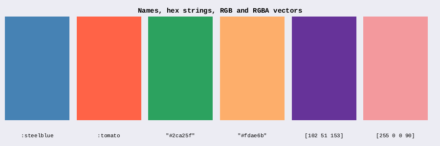
37.2 Palettes
Palettes are named lists of colours (plot/palette gives one, plot/find-palette lists the names); gradients are functions of t in [0 1] (plot/gradient, names from plot/find-gradient). A scale’s :range takes either name.
37.2.1 Palette types
Qualitative palettes for categories, sequential for ordered values, diverging around a meaningful middle (here the mean mpg, :midpoint). The lightest end of a sequential palette is almost white and nearly disappears against the grey panel - a property of the palette worth knowing when choosing one.
Source: R Graph Gallery - Dealing with color in ggplot2. Data: Edgar Anderson’s iris measurements, R datasets package iris (Anderson 1935; Fisher 1936); licence: Part of R (GPL-2 | GPL-3).
(let [mean-mpg (stats/mean (map :mpg mtcars))]
(plot/render-image
(plot/arrange
[{:data iris :mapping {:x :sepal-length :y :sepal-width :color :species}
:scales {:color {:range :RColorBrewer/Set2}}
:charts [(chart/scatter {:size 7})] :labels {:title "qualitative" :x "sepal length" :y "sepal width"}}
{:data iris :mapping {:x :sepal-length :y :sepal-width :color :petal-length}
:scales {:color {:range :blues-9}}
:charts [(chart/scatter {:size 7})] :labels {:title "sequential" :x "sepal length" :y "sepal width"}}
{:data mtcars :mapping {:x :wt :y :hp :color #(- (:mpg %) mean-mpg)}
:scales {:color {:range :RColorBrewer/RdBu :midpoint 0 :title "mpg - mean"}}
:charts [(chart/scatter {:size 8})] :labels {:title "diverging" :x "weight" :y "horse power"}}]
{:columns 3})
{:width 1000 :height 360}))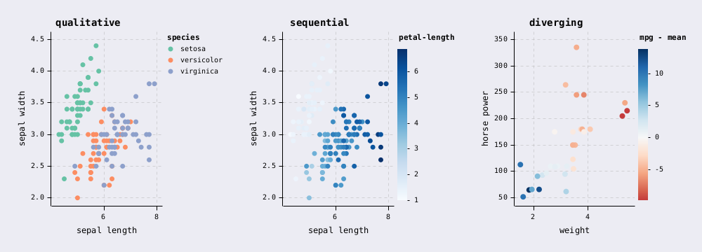
37.2.2 Palette families
The same scatter with a ColorBrewer, viridis, MetBrewer and Tableau palette; plot/find-palette lists palettes by name:
Source: R Graph Gallery - paletteer, viridis, RColorBrewer (1, 2, 3). Data: Edgar Anderson’s iris measurements, R datasets package iris (Anderson 1935; Fisher 1936); licence: Part of R (GPL-2 | GPL-3).
(plot/find-palette #"(?i)tableau")(:tableau-10
:tableau-10-2
:tableau-10-light
:tableau-10-medium
:tableau-20
:tableau-20-2
:tableau-classic-20
:tableau-classic-medium
:ggthemes/Tableau_10
:ggthemes/Tableau_20)(plot/render-image
(plot/arrange
(for [[title palette] [["RColorBrewer Dark2" :RColorBrewer/Dark2] ["viridis" :viridis]
["MetBrewer Klimt" :MetBrewer/Klimt] ["Tableau 10" :tableau-10]]]
{:data iris :mapping {:x :petal-length :y :petal-width :color :species}
:scales {:color {:range palette :spread (= palette :viridis)}}
:charts [(chart/scatter {:size 7})]
:labels {:title title :x "petal length" :y "petal width"}})
{:columns 2})
{:width 900 :height 650})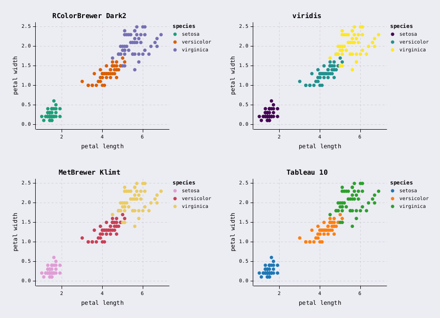
:viridis has 256 colours, so its scale uses :spread true - three colours across the whole palette instead of its first three.
37.2.3 Palette swatches
A palette shown as colours: rects with an identity colour scale (the data values are the colours). Every row is resampled to nine colours with (plot/palette p 9), which also samples a gradient (given as (plot/gradient name)).
Source: R Graph Gallery - Color palette finder.
(let [palettes [[":RColorBrewer/Set2" :RColorBrewer/Set2] [":tableau-10" :tableau-10]
[":MetBrewer/Hiroshige" :MetBrewer/Hiroshige] [":blues-9" :blues-9] [":viridis" :viridis]
["gradient :viridis/magma" (plot/gradient :viridis/magma)] [":RColorBrewer/RdBu" :RColorBrewer/RdBu]]
rows (for [[row [_ p]] (map-indexed vector palettes)
[i col] (map-indexed vector (plot/palette p 9))]
{:x0 i :x1 (+ i 0.92) :y0 (- row) :y1 (- 0.85 row) :c col})
names (for [[row [label]] (map-indexed vector palettes)] {:x -0.2 :y (- 0.42 row) :label label})]
(plot/render-image
{:scales {:color {:kind :identity} :x {:domain [-3.6 9] :axis false} :y {:axis false}}
:charts [(chart/rect {:data rows :mapping {:x0 :x0 :x1 :x1 :y0 :y0 :y1 :y1 :color :c}})
(chart/text {:data names :mapping {:x :x :y :y :label :label} :anchor [:right :middle] :size 11})]
:labels {:title "Seven palettes and gradients, nine colours each" :x nil :y nil}}
{:width 900 :height 500}))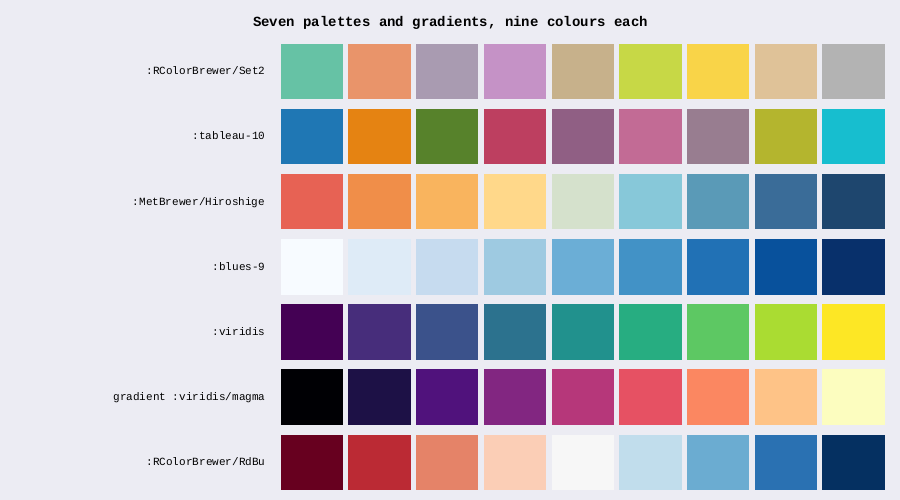
37.3 Discrete colour scales
Categories take palette colours in level order, unless a scale says otherwise.
37.3.1 Manual colours
A level map as :range gives every level its own colour; a level without one is an error.
Source: R Graph Gallery - Dealing with color in ggplot2. Data: Edgar Anderson’s iris measurements, R datasets package iris (Anderson 1935; Fisher 1936); licence: Part of R (GPL-2 | GPL-3).
(plot/render-image
{:data iris :mapping {:x :sepal-length :y :sepal-width :color :species}
:scales {:color {:range {"setosa" :darkorange "versicolor" :purple "virginica" :teal}}}
:charts [(chart/scatter {:size 8})]
:labels {:title "Manual colours per species" :x "sepal length" :y "sepal width"}}
{:width 800 :height 500})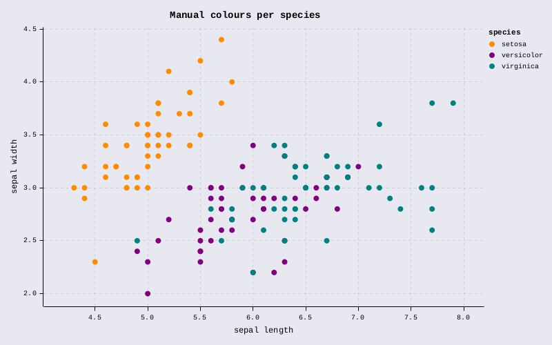
37.3.2 Highlighting a group
One group in colour, the others grey. Cylinder counts are numbers, so the scale is declared categorical.
Source: data-to-viz - The spaghetti plot; don’t use color if it communicates nothing (1, 2). Data: Motor Trend car road tests (1974), R datasets package mtcars (Henderson & Velleman 1981); licence: Part of R (GPL-2 | GPL-3).
(plot/render-image
{:data mtcars :mapping {:x :hp :y :mpg :color :cyl}
:scales {:color {:type :categorical :range {4 :lightgrey 6 :firebrick 8 :lightgrey} :title "cylinders"}}
:charts [(chart/scatter {:size 9})]
:labels {:title "Six-cylinder cars" :x "horse power" :y "miles per gallon"}}
{:width 800 :height 500})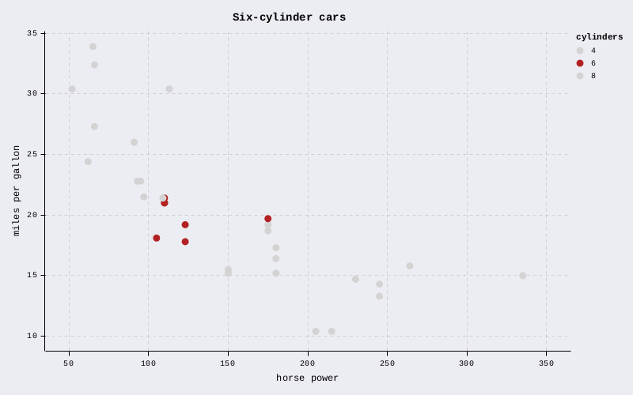
37.3.3 Sequential palettes on categories
A sequential palette has more colours than there are levels: by default the levels take its first colours (all light here, the first nearly invisible on the grey panel); :spread true resamples it across its whole range.
Source: R Graph Gallery - RColorBrewer palettes. Data: Barley yields, Minnesota 1931-1932, R lattice package barley (Immer et al. 1934; Fisher 1971; Cleveland 1993); licence: GPL (>= 2) (lattice).
(plot/render-image
(plot/arrange
(for [spread [false true]]
{:data barley :mapping {:x :yield :y :variety :color :site}
:scales {:color {:range :blues-9 :spread spread}}
:charts [(chart/scatter {:size 8})]
:labels {:title (if spread ":spread true" "first colours (default)") :x "yield" :y nil}})
{:columns 2})
{:width 1000 :height 450})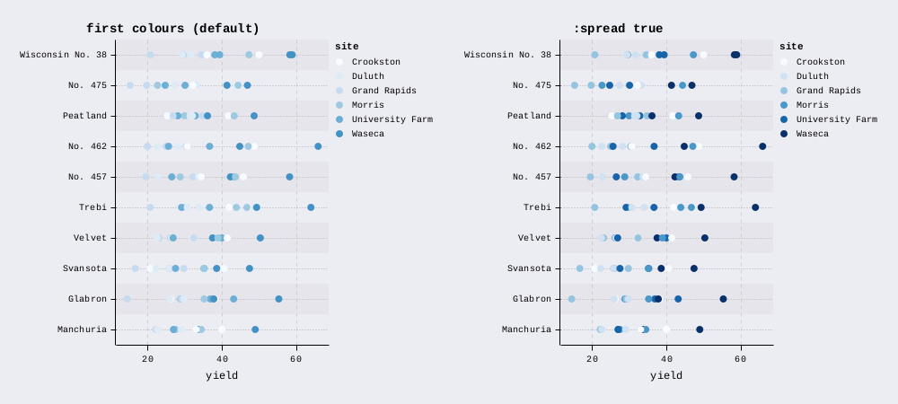
37.4 Continuous colour scales
Numbers on :color get a gradient and a colour bar.
37.4.1 Gradients
:range takes two colours, several colours, a gradient name or any function of t in [0 1].
Source: R Graph Gallery - Dealing with color in ggplot2; viridis (1, 2). Data: Earthquakes off Fiji since 1964, R datasets package quakes (Harvard PRIM-H project); licence: Part of R (GPL-2 | GPL-3).
(plot/render-image
(plot/arrange
(for [[title color-range] [["two colours" [:lightyellow :darkred]]
["four colours" [:lightyellow :orange :red :darkred]]
["gradient name :viridis/magma" :viridis/magma]
["a function: lerp navy to gold" (fn [t] (c/lerp :navy :gold t))]]]
{:data quakes :mapping {:x :long :y :lat :color :depth}
:scales {:color {:range color-range}}
:charts [(chart/scatter {:size 5})]
:labels {:title title :x "longitude" :y "latitude"}})
{:columns 2})
{:width 900 :height 700})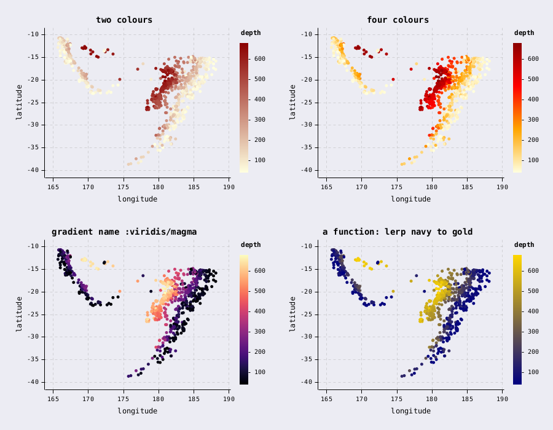
37.4.2 Diverging gradient with a midpoint
:midpoint puts a value at the middle of the gradient and scales both sides by the larger distance to it; the colour bar ticks the midpoint. :reverse true turns RdBu around, so high horse power is red.
Source: R Graph Gallery - Dealing with color in ggplot2. Data: Motor Trend car road tests (1974), R datasets package mtcars (Henderson & Velleman 1981); licence: Part of R (GPL-2 | GPL-3).
(let [mean-hp (stats/mean (map :hp mtcars))]
(plot/render-image
{:data mtcars :mapping {:x :wt :y :mpg :color :hp}
:scales {:color {:range :RColorBrewer/RdBu :midpoint mean-hp :reverse true}}
:charts [(chart/scatter {:size 10})]
:labels {:title (format "Horse power around its mean (%.1f)" mean-hp) :x "weight" :y "miles per gallon"}}
{:width 800 :height 500}))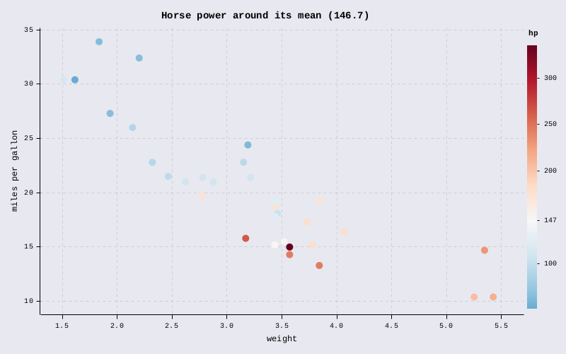
37.4.3 Reversing
:reverse true turns the colours around: categories keep their order with the colours reversed, a gradient runs the other way.
Source: R Graph Gallery - Dealing with color in ggplot2. Data: Edgar Anderson’s iris measurements, R datasets package iris (Anderson 1935; Fisher 1936); licence: Part of R (GPL-2 | GPL-3).
(plot/render-image
(plot/arrange
(for [[title color scale] [["categories" :species {:range :RColorBrewer/Set1}]
["categories, reversed" :species {:range :RColorBrewer/Set1 :reverse true}]
["gradient" :petal-length {:range :viridis/viridis}]
["gradient, reversed" :petal-length {:range :viridis/viridis :reverse true}]]]
{:data iris :mapping {:x :sepal-length :y :sepal-width :color color}
:scales {:color scale}
:charts [(chart/scatter {:size 7})]
:labels {:title title :x "sepal length" :y "sepal width"}})
{:columns 2})
{:width 900 :height 650})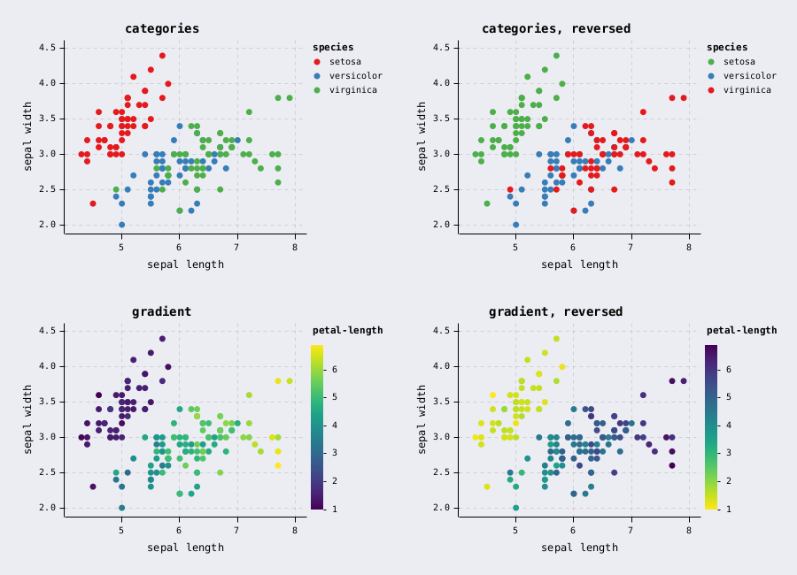
37.4.4 Binned colours
:kind :binned colours values by bin: a count of equal bins, a breaks vector, or quantile bins ({:quantiles 5}: five bins of about equal counts, an :estimation strategy optional); the colour bar has one block per bin. For a discrete legend of intervals, bin the data with levels/bin, which takes the same :bins.
Source: R Graph Gallery - Dealing with color in ggplot2. Data: Prices and attributes of round cut diamonds, R ggplot2 package diamonds (Wickham et al.); licence: MIT (ggplot2).
(def diamonds-sample
"A fixed 5% sample of diamonds (the full data has 53,940 rows)."
(let [rng (r/rng :mersenne 7)] (filterv (fn [_] (< (r/drandom rng) 0.05)) diamonds)))| carat | cut | color | clarity | depth | table | price | x | y | z |
|---|---|---|---|---|---|---|---|---|---|
| 0.23 | Very Good | E | VS2 | 63.8 | 55 | 352 | 3.85 | 3.92 | 2.48 |
| 0.23 | Very Good | D | VS2 | 60.5 | 61 | 357 | 3.96 | 3.97 | 2.4 |
| 0.23 | Very Good | E | VS1 | 59.5 | 58 | 402 | 4.01 | 4.06 | 2.4 |
| 0.33 | Ideal | I | SI2 | 61.8 | 55 | 403 | 4.49 | 4.51 | 2.78 |
| 0.32 | Good | H | SI2 | 63.1 | 56 | 403 | 4.34 | 4.37 | 2.75 |
| 0.32 | Good | H | SI2 | 63.8 | 56 | 403 | 4.36 | 4.38 | 2.79 |
| 0.3 | Ideal | D | SI1 | 62.1 | 56 | 552 | 4.3 | 4.33 | 2.68 |
| 0.3 | Very Good | H | SI1 | 63.1 | 56 | 554 | 4.29 | 4.27 | 2.7 |
| 0.75 | Very Good | D | SI1 | 63.2 | 56 | 2760 | 5.8 | 5.75 | 3.65 |
| 0.8 | Ideal | I | VS1 | 62.9 | 56 | 2760 | 5.94 | 5.87 | 3.72 |
| 0.74 | Ideal | I | VVS2 | 62.3 | 55 | 2761 | 5.77 | 5.81 | 3.61 |
| 0.7 | Fair | F | VS2 | 64.5 | 57 | 2762 | 5.57 | 5.53 | 3.58 |
| 0.7 | Very Good | D | VS1 | 62.7 | 58 | 2777 | 5.66 | 5.73 | 3.57 |
| 0.71 | Very Good | F | VS2 | 62.8 | 57 | 2777 | 5.64 | 5.69 | 3.56 |
| 0.71 | Good | F | VS2 | 63.8 | 58 | 2777 | 5.61 | 5.64 | 3.59 |
| 0.7 | Ideal | E | VS2 | 62.1 | 55 | 2777 | 5.7 | 5.67 | 3.53 |
| 0.52 | Ideal | F | VVS1 | 61.3 | 55 | 2778 | 5.19 | 5.22 | 3.19 |
| 0.74 | Ideal | G | VS1 | 61.5 | 55 | 2780 | 5.81 | 5.86 | 3.59 |
| 0.53 | Very Good | D | VVS2 | 57.5 | 64 | 2782 | 5.34 | 5.37 | 3.08 |
| 0.77 | Good | G | VS1 | 59.4 | 64 | 2788 | 5.97 | 5.92 | 3.53 |
| 0.76 | Premium | E | SI1 | 61.8 | 58 | 2789 | 5.82 | 5.86 | 3.61 |
| 0.7 | Very Good | E | VS2 | 62.9 | 57 | 2793 | 5.66 | 5.69 | 3.57 |
| 0.79 | Very Good | E | SI1 | 63.2 | 56 | 2794 | 5.91 | 5.86 | 3.72 |
| 0.83 | Ideal | G | SI1 | 61.8 | 57 | 2800 | 6.03 | 6.07 | 3.74 |
| 0.87 | Very Good | G | SI2 | 59.9 | 58 | 2802 | 6.19 | 6.23 | 3.72 |
| 0.53 | Ideal | F | IF | 61.9 | 54 | 2802 | 5.22 | 5.25 | 3.24 |
| 0.74 | Very Good | E | SI1 | 63.5 | 56 | 2803 | 5.74 | 5.79 | 3.66 |
| 0.73 | Ideal | E | SI1 | 60.6 | 54 | 2803 | 5.84 | 5.89 | 3.55 |
| 0.72 | Ideal | D | SI1 | 62.2 | 56 | 2804 | 5.74 | 5.77 | 3.58 |
| 0.7 | Good | E | SI1 | 63.5 | 59 | 2812 | 5.49 | 5.53 | 3.5 |
| 0.32 | Premium | I | SI1 | 61 | 59 | 554 | 4.39 | 4.36 | 2.67 |
| 0.3 | Premium | H | SI1 | 60.9 | 59 | 554 | 4.31 | 4.29 | 2.62 |
| 0.51 | Ideal | F | VVS1 | 62 | 57 | 2812 | 5.15 | 5.11 | 3.18 |
| 0.72 | Premium | E | VS2 | 60.9 | 60 | 2822 | 5.8 | 5.76 | 3.52 |
| 0.71 | Premium | E | VS2 | 62.3 | 58 | 2823 | 5.71 | 5.66 | 3.54 |
| 0.71 | Ideal | E | SI1 | 60.5 | 56 | 2823 | 5.77 | 5.73 | 3.47 |
| 0.77 | Ideal | I | VVS2 | 62.1 | 57 | 2824 | 5.84 | 5.86 | 3.63 |
| 0.7 | Very Good | D | SI1 | 62.3 | 59 | 2827 | 5.67 | 5.7 | 3.54 |
| 0.71 | Premium | F | VS1 | 62.2 | 58 | 2832 | 5.72 | 5.66 | 3.54 |
| 0.78 | Ideal | I | VS2 | 61.8 | 55 | 2834 | 5.92 | 5.95 | 3.67 |
| 0.75 | Premium | F | VS2 | 59.6 | 59 | 2835 | 6.04 | 5.94 | 3.57 |
| 0.71 | Premium | F | VS1 | 59.1 | 61 | 2839 | 5.84 | 5.81 | 3.44 |
| 0.7 | Premium | H | VVS1 | 59.2 | 60 | 2840 | 5.87 | 5.78 | 3.45 |
| 0.73 | Very Good | D | SI1 | 63.9 | 57 | 2841 | 5.66 | 5.71 | 3.63 |
| 0.82 | Ideal | F | SI2 | 61.7 | 53 | 2841 | 6 | 6.12 | 3.74 |
| 0.72 | Ideal | E | VS2 | 62 | 57 | 2843 | 5.71 | 5.74 | 3.55 |
| 0.74 | Very Good | E | VS1 | 63.1 | 58 | 2849 | 5.75 | 5.73 | 3.62 |
| 0.7 | Very Good | E | VS2 | 61 | 60 | 2850 | 5.74 | 5.77 | 3.51 |
| 0.73 | Ideal | E | SI1 | 62.7 | 55 | 2852 | 5.7 | 5.79 | 3.6 |
| 0.33 | Premium | J | VS1 | 61.5 | 61 | 557 | 4.46 | 4.39 | 2.72 |
| 0.33 | Ideal | J | VS1 | 62.1 | 55 | 557 | 4.44 | 4.41 | 2.75 |
| 0.9 | Fair | G | SI2 | 64.5 | 56 | 2858 | 6.06 | 6 | 3.89 |
| 0.71 | Very Good | F | VVS1 | 63.2 | 60 | 2862 | 5.65 | 5.61 | 3.56 |
| 0.91 | Premium | J | SI1 | 59.5 | 62 | 2863 | 6.4 | 6.18 | 3.74 |
| 0.71 | Ideal | E | VS1 | 62.2 | 55 | 2866 | 5.74 | 5.7 | 3.56 |
| 0.52 | Premium | F | VVS2 | 61.8 | 60 | 2870 | 5.16 | 5.13 | 3.18 |
| 1.04 | Premium | I | I1 | 61.6 | 61 | 2870 | 6.47 | 6.45 | 3.98 |
| 0.9 | Premium | J | SI1 | 60.9 | 61 | 2873 | 6.26 | 6.22 | 3.8 |
| 0.7 | Ideal | F | VS1 | 62.4 | 56 | 2874 | 5.69 | 5.65 | 3.54 |
| 0.71 | Ideal | E | VS1 | 62.4 | 56 | 2877 | 5.75 | 5.7 | 3.57 |
| 0.92 | Very Good | J | SI2 | 58.7 | 61 | 2880 | 6.34 | 6.43 | 3.75 |
| 0.71 | Very Good | G | VS2 | 60.9 | 56 | 2895 | 5.75 | 5.78 | 3.51 |
| 0.79 | Ideal | D | SI1 | 61.5 | 56 | 2896 | 5.91 | 5.96 | 3.65 |
| 0.72 | Premium | E | VS2 | 61.1 | 59 | 2903 | 5.8 | 5.75 | 3.53 |
| 0.7 | Ideal | F | VS2 | 62.3 | 53 | 2907 | 5.69 | 5.73 | 3.56 |
| 0.79 | Ideal | G | SI1 | 60.3 | 60 | 2907 | 5.98 | 6.02 | 3.62 |
| 0.31 | Ideal | E | SI2 | 61.7 | 56 | 558 | 4.4 | 4.35 | 2.7 |
| 0.7 | Very Good | D | VS2 | 60.7 | 60 | 2913 | 5.72 | 5.74 | 3.48 |
| 0.71 | Premium | D | SI1 | 61.4 | 58 | 2913 | 5.75 | 5.79 | 3.54 |
| 0.71 | Very Good | F | VS2 | 59.5 | 58 | 2918 | 5.82 | 5.87 | 3.48 |
| 0.9 | Fair | I | VS2 | 64.1 | 66 | 2921 | 6.04 | 5.98 | 3.85 |
| 0.77 | Ideal | D | SI2 | 60.6 | 56 | 2922 | 5.95 | 5.9 | 3.59 |
| 0.72 | Very Good | E | VS2 | 63 | 57 | 2923 | 5.69 | 5.73 | 3.6 |
| 0.71 | Very Good | E | VS2 | 61.3 | 60 | 2930 | 5.74 | 5.71 | 3.51 |
| 0.71 | Ideal | G | VS1 | 62.7 | 57 | 2930 | 5.69 | 5.73 | 3.58 |
| 0.7 | Premium | G | VVS1 | 62 | 61 | 2932 | 5.71 | 5.62 | 3.51 |
| 0.71 | Ideal | D | SI2 | 62 | 54 | 2934 | 5.77 | 5.74 | 3.57 |
| 0.7 | Ideal | F | VS1 | 61.2 | 54 | 2940 | 5.92 | 5.64 | 3.54 |
| 0.7 | Ideal | E | VS2 | 61.5 | 56 | 2940 | 5.73 | 5.68 | 3.51 |
| 0.71 | Ideal | G | VS1 | 62.4 | 57 | 2950 | 5.68 | 5.73 | 3.56 |
| 0.7 | Ideal | E | VS2 | 62.1 | 55 | 2952 | 5.71 | 5.75 | 3.56 |
| 0.79 | Premium | G | VS2 | 62.3 | 58 | 2959 | 5.92 | 5.89 | 3.68 |
| 0.63 | Ideal | F | VVS2 | 62.3 | 56 | 2961 | 5.48 | 5.5 | 3.42 |
| 0.63 | Ideal | D | VVS2 | 62.6 | 56 | 2962 | 5.47 | 5.49 | 3.43 |
| 0.72 | Ideal | E | VS2 | 62 | 56 | 2962 | 5.73 | 5.76 | 3.56 |
| 0.7 | Ideal | G | SI1 | 60.9 | 56 | 2965 | 5.73 | 5.79 | 3.51 |
| 0.7 | Very Good | E | VS1 | 61.5 | 56 | 2967 | 5.69 | 5.75 | 3.52 |
| 0.31 | Very Good | G | VS2 | 60.9 | 57 | 559 | 4.37 | 4.39 | 2.67 |
| 0.24 | Ideal | G | IF | 61.8 | 55 | 559 | 3.99 | 4.02 | 2.47 |
| 0.27 | Very Good | F | IF | 60.4 | 58 | 560 | 4.18 | 4.2 | 2.53 |
| 0.91 | Ideal | I | SI2 | 61.6 | 57 | 2981 | 6.24 | 6.23 | 3.84 |
| 1.03 | Very Good | G | I1 | 63.2 | 58 | 2988 | 6.44 | 6.34 | 4.04 |
| 0.77 | Ideal | D | SI1 | 61.4 | 56 | 2996 | 5.9 | 5.93 | 3.63 |
| 0.7 | Ideal | D | VS2 | 62.8 | 57 | 2998 | 5.69 | 5.75 | 3.59 |
| 0.77 | Ideal | E | SI1 | 62.5 | 56 | 3000 | 5.87 | 5.91 | 3.68 |
| 0.71 | Premium | D | VS2 | 62.1 | 60 | 3002 | 5.68 | 5.72 | 3.54 |
| 0.7 | Premium | E | VS1 | 61.8 | 58 | 3016 | 5.71 | 5.75 | 3.54 |
| 0.76 | Ideal | E | SI1 | 62.5 | 57 | 3033 | 5.8 | 5.82 | 3.63 |
| 0.32 | Ideal | H | VS1 | 61.9 | 55 | 561 | 4.4 | 4.42 | 2.73 |
| 0.71 | Ideal | F | VS1 | 62.7 | 57 | 3041 | 5.66 | 5.7 | 3.56 |
| … | … | … | … | … | … | … | … | … | … |
(plot/render-image
(plot/arrange
(for [[title bins] [["5 equal bins" 5] ["breaks vector" [0 1000 2500 5000 10000 20000]]
["{:quantiles 5}" {:quantiles 5}]]]
{:data diamonds-sample :mapping {:x :carat :y :price :color :price}
:scales {:color {:kind :binned :bins bins :range :viridis}}
:charts [(chart/scatter {:size 4})]
:labels {:title title :x "carat" :y "price"}})
{:columns 3})
{:width 1000 :height 400})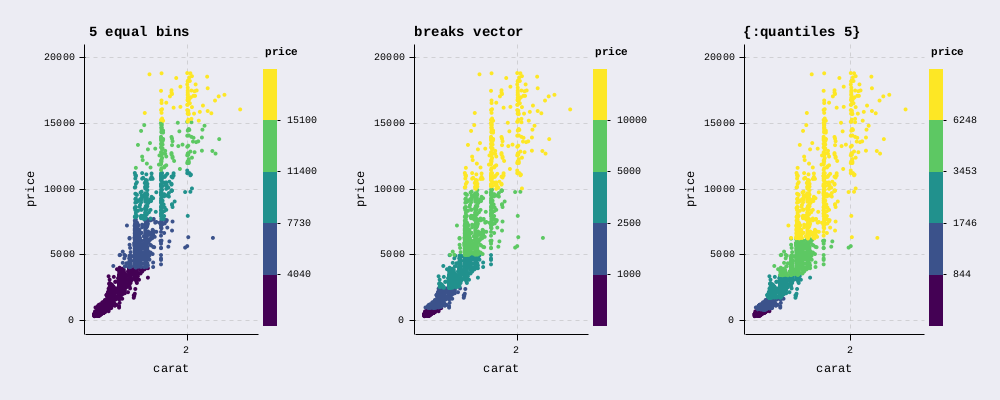
37.5 Colour in practice
37.5.1 Missing values and the theme palette
A missing value gets the theme’s NA colour and the last legend entry; the theme :palette sets the default colours of every plot (here a MetBrewer palette and a magenta NA).
Source: R Graph Gallery - Dealing with color in ggplot2. Data: Edgar Anderson’s iris measurements, R datasets package iris (Anderson 1935; Fisher 1936); licence: Part of R (GPL-2 | GPL-3).
(def iris-with-na
"Iris with every seventh species missing."
(map-indexed (fn [i row] (if (zero? (mod i 7)) (assoc row :species nil) row)) iris))| sepal-length | sepal-width | petal-length | petal-width | species |
|---|---|---|---|---|
| 5.1 | 3.5 | 1.4 | 0.2 | |
| 4.9 | 3 | 1.4 | 0.2 | setosa |
| 4.7 | 3.2 | 1.3 | 0.2 | setosa |
| 4.6 | 3.1 | 1.5 | 0.2 | setosa |
| 5 | 3.6 | 1.4 | 0.2 | setosa |
| 5.4 | 3.9 | 1.7 | 0.4 | setosa |
| 4.6 | 3.4 | 1.4 | 0.3 | setosa |
| 5 | 3.4 | 1.5 | 0.2 | |
| 4.4 | 2.9 | 1.4 | 0.2 | setosa |
| 4.9 | 3.1 | 1.5 | 0.1 | setosa |
| 5.4 | 3.7 | 1.5 | 0.2 | setosa |
| 4.8 | 3.4 | 1.6 | 0.2 | setosa |
| 4.8 | 3 | 1.4 | 0.1 | setosa |
| 4.3 | 3 | 1.1 | 0.1 | setosa |
| 5.8 | 4 | 1.2 | 0.2 | |
| 5.7 | 4.4 | 1.5 | 0.4 | setosa |
| 5.4 | 3.9 | 1.3 | 0.4 | setosa |
| 5.1 | 3.5 | 1.4 | 0.3 | setosa |
| 5.7 | 3.8 | 1.7 | 0.3 | setosa |
| 5.1 | 3.8 | 1.5 | 0.3 | setosa |
| 5.4 | 3.4 | 1.7 | 0.2 | setosa |
| 5.1 | 3.7 | 1.5 | 0.4 | |
| 4.6 | 3.6 | 1 | 0.2 | setosa |
| 5.1 | 3.3 | 1.7 | 0.5 | setosa |
| 4.8 | 3.4 | 1.9 | 0.2 | setosa |
| 5 | 3 | 1.6 | 0.2 | setosa |
| 5 | 3.4 | 1.6 | 0.4 | setosa |
| 5.2 | 3.5 | 1.5 | 0.2 | setosa |
| 5.2 | 3.4 | 1.4 | 0.2 | |
| 4.7 | 3.2 | 1.6 | 0.2 | setosa |
| 4.8 | 3.1 | 1.6 | 0.2 | setosa |
| 5.4 | 3.4 | 1.5 | 0.4 | setosa |
| 5.2 | 4.1 | 1.5 | 0.1 | setosa |
| 5.5 | 4.2 | 1.4 | 0.2 | setosa |
| 4.9 | 3.1 | 1.5 | 0.2 | setosa |
| 5 | 3.2 | 1.2 | 0.2 | |
| 5.5 | 3.5 | 1.3 | 0.2 | setosa |
| 4.9 | 3.6 | 1.4 | 0.1 | setosa |
| 4.4 | 3 | 1.3 | 0.2 | setosa |
| 5.1 | 3.4 | 1.5 | 0.2 | setosa |
| 5 | 3.5 | 1.3 | 0.3 | setosa |
| 4.5 | 2.3 | 1.3 | 0.3 | setosa |
| 4.4 | 3.2 | 1.3 | 0.2 | |
| 5 | 3.5 | 1.6 | 0.6 | setosa |
| 5.1 | 3.8 | 1.9 | 0.4 | setosa |
| 4.8 | 3 | 1.4 | 0.3 | setosa |
| 5.1 | 3.8 | 1.6 | 0.2 | setosa |
| 4.6 | 3.2 | 1.4 | 0.2 | setosa |
| 5.3 | 3.7 | 1.5 | 0.2 | setosa |
| 5 | 3.3 | 1.4 | 0.2 | |
| 7 | 3.2 | 4.7 | 1.4 | versicolor |
| 6.4 | 3.2 | 4.5 | 1.5 | versicolor |
| 6.9 | 3.1 | 4.9 | 1.5 | versicolor |
| 5.5 | 2.3 | 4 | 1.3 | versicolor |
| 6.5 | 2.8 | 4.6 | 1.5 | versicolor |
| 5.7 | 2.8 | 4.5 | 1.3 | versicolor |
| 6.3 | 3.3 | 4.7 | 1.6 | |
| 4.9 | 2.4 | 3.3 | 1 | versicolor |
| 6.6 | 2.9 | 4.6 | 1.3 | versicolor |
| 5.2 | 2.7 | 3.9 | 1.4 | versicolor |
| 5 | 2 | 3.5 | 1 | versicolor |
| 5.9 | 3 | 4.2 | 1.5 | versicolor |
| 6 | 2.2 | 4 | 1 | versicolor |
| 6.1 | 2.9 | 4.7 | 1.4 | |
| 5.6 | 2.9 | 3.6 | 1.3 | versicolor |
| 6.7 | 3.1 | 4.4 | 1.4 | versicolor |
| 5.6 | 3 | 4.5 | 1.5 | versicolor |
| 5.8 | 2.7 | 4.1 | 1 | versicolor |
| 6.2 | 2.2 | 4.5 | 1.5 | versicolor |
| 5.6 | 2.5 | 3.9 | 1.1 | versicolor |
| 5.9 | 3.2 | 4.8 | 1.8 | |
| 6.1 | 2.8 | 4 | 1.3 | versicolor |
| 6.3 | 2.5 | 4.9 | 1.5 | versicolor |
| 6.1 | 2.8 | 4.7 | 1.2 | versicolor |
| 6.4 | 2.9 | 4.3 | 1.3 | versicolor |
| 6.6 | 3 | 4.4 | 1.4 | versicolor |
| 6.8 | 2.8 | 4.8 | 1.4 | versicolor |
| 6.7 | 3 | 5 | 1.7 | |
| 6 | 2.9 | 4.5 | 1.5 | versicolor |
| 5.7 | 2.6 | 3.5 | 1 | versicolor |
| 5.5 | 2.4 | 3.8 | 1.1 | versicolor |
| 5.5 | 2.4 | 3.7 | 1 | versicolor |
| 5.8 | 2.7 | 3.9 | 1.2 | versicolor |
| 6 | 2.7 | 5.1 | 1.6 | versicolor |
| 5.4 | 3 | 4.5 | 1.5 | |
| 6 | 3.4 | 4.5 | 1.6 | versicolor |
| 6.7 | 3.1 | 4.7 | 1.5 | versicolor |
| 6.3 | 2.3 | 4.4 | 1.3 | versicolor |
| 5.6 | 3 | 4.1 | 1.3 | versicolor |
| 5.5 | 2.5 | 4 | 1.3 | versicolor |
| 5.5 | 2.6 | 4.4 | 1.2 | versicolor |
| 6.1 | 3 | 4.6 | 1.4 | |
| 5.8 | 2.6 | 4 | 1.2 | versicolor |
| 5 | 2.3 | 3.3 | 1 | versicolor |
| 5.6 | 2.7 | 4.2 | 1.3 | versicolor |
| 5.7 | 3 | 4.2 | 1.2 | versicolor |
| 5.7 | 2.9 | 4.2 | 1.3 | versicolor |
| 6.2 | 2.9 | 4.3 | 1.3 | versicolor |
| 5.1 | 2.5 | 3 | 1.1 | |
| 5.7 | 2.8 | 4.1 | 1.3 | versicolor |
| … | … | … | … | … |
(plot/render-image
(plot/arrange
[{:data iris-with-na :mapping {:x :sepal-length :y :sepal-width :color :species}
:charts [(chart/scatter {:size 7})] :labels {:title "default theme" :x "sepal length" :y "sepal width"}}
{:data iris-with-na :mapping {:x :sepal-length :y :sepal-width :color :species}
:theme {:palette {:color :MetBrewer/Egypt :na [230 0 230]}}
:charts [(chart/scatter {:size 7})] :labels {:title "theme :palette" :x "sepal length" :y "sepal width"}}]
{:columns 2})
{:width 1000 :height 420})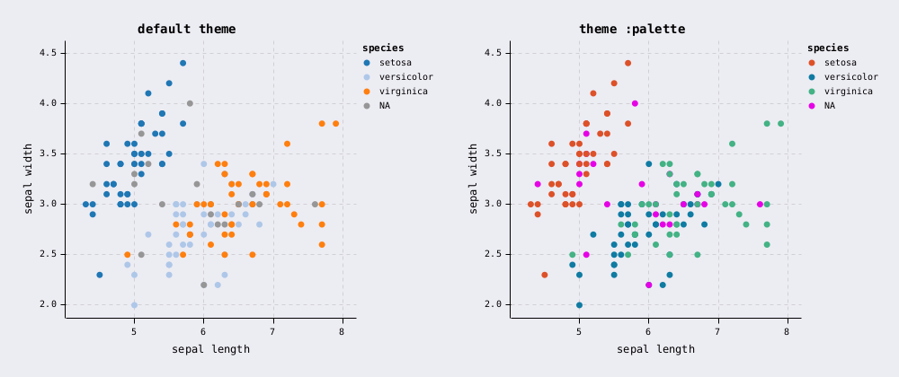
37.5.2 Transparency against overplotting
With 53,940 diamonds the opaque points hide where most of them are; a colour with a low alpha shows the density.
Source: data-to-viz - Overplotting. Data: Prices and attributes of round cut diamonds, R ggplot2 package diamonds (Wickham et al.); licence: MIT (ggplot2).
(plot/render-image
(plot/arrange
(for [[title color] [["opaque" [0 114 178]] ["alpha 12 of 255" [0 114 178 12]]]]
{:data diamonds :mapping {:x :carat :y :price}
:charts [(chart/scatter {:size 4 :color color})]
:labels {:title title :x "carat" :y "price"}})
{:columns 2})
{:width 1000 :height 450})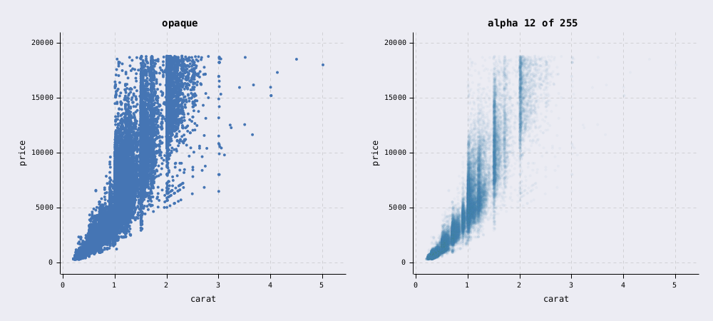
37.5.3 A line coloured by a variable
A linear or binned colour on a line colours it along its length: each segment takes the colour of the mean of its two ends.
Source: R Graph Gallery - Dealing with color in ggplot2. Data: Weather in Lincoln, Nebraska, 2016, R ggridges package lincoln_weather (Weather Underground, via Wilke); licence: GPL-2 (ggridges).
(def lincoln-days
"Lincoln weather with the day of the year."
(map-indexed (fn [i row] (assoc row :day (inc i))) lincoln))| date | month | mean-temp | max-temp | min-temp | day |
|---|---|---|---|---|---|
| 2016-1-1 | January | 24 | 37 | 11 | 1 |
| 2016-1-2 | January | 23 | 41 | 5 | 2 |
| 2016-1-3 | January | 23 | 37 | 8 | 3 |
| 2016-1-4 | January | 17 | 30 | 4 | 4 |
| 2016-1-5 | January | 29 | 38 | 19 | 5 |
| 2016-1-6 | January | 33 | 34 | 32 | 6 |
| 2016-1-7 | January | 30 | 33 | 27 | 7 |
| 2016-1-8 | January | 25 | 28 | 22 | 8 |
| 2016-1-9 | January | 9 | 22 | -4 | 9 |
| 2016-1-10 | January | 11 | 31 | -9 | 10 |
| 2016-1-11 | January | 28 | 37 | 18 | 11 |
| 2016-1-12 | January | 24 | 34 | 14 | 12 |
| 2016-1-13 | January | 33 | 47 | 19 | 13 |
| 2016-1-14 | January | 40 | 51 | 28 | 14 |
| 2016-1-15 | January | 29 | 35 | 23 | 15 |
| 2016-1-16 | January | 19 | 30 | 7 | 16 |
| 2016-1-17 | January | 5 | 15 | -5 | 17 |
| 2016-1-18 | January | 11 | 26 | -4 | 18 |
| 2016-1-19 | January | 22 | 25 | 19 | 19 |
| 2016-1-20 | January | 28 | 32 | 24 | 20 |
| 2016-1-21 | January | 25 | 29 | 21 | 21 |
| 2016-1-22 | January | 22 | 25 | 19 | 22 |
| 2016-1-23 | January | 28 | 36 | 20 | 23 |
| 2016-1-24 | January | 30 | 41 | 19 | 24 |
| 2016-1-25 | January | 26 | 30 | 22 | 25 |
| 2016-1-26 | January | 29 | 42 | 15 | 26 |
| 2016-1-27 | January | 33 | 49 | 17 | 27 |
| 2016-1-28 | January | 41 | 51 | 31 | 28 |
| 2016-1-29 | January | 41 | 54 | 27 | 29 |
| 2016-1-30 | January | 39 | 49 | 28 | 30 |
| 2016-1-31 | January | 35 | 47 | 22 | 31 |
| 2016-2-1 | February | 31 | 42 | 20 | 32 |
| 2016-2-2 | February | 27 | 32 | 21 | 33 |
| 2016-2-3 | February | 17 | 27 | 6 | 34 |
| 2016-2-4 | February | 18 | 33 | 2 | 35 |
| 2016-2-5 | February | 28 | 39 | 17 | 36 |
| 2016-2-6 | February | 24 | 39 | 10 | 37 |
| 2016-2-7 | February | 36 | 42 | 30 | 38 |
| 2016-2-8 | February | 31 | 36 | 25 | 39 |
| 2016-2-9 | February | 26 | 29 | 22 | 40 |
| 2016-2-10 | February | 37 | 56 | 17 | 41 |
| 2016-2-11 | February | 32 | 38 | 26 | 42 |
| 2016-2-12 | February | 23 | 29 | 17 | 43 |
| 2016-2-13 | February | 19 | 23 | 15 | 44 |
| 2016-2-14 | February | 35 | 49 | 20 | 45 |
| 2016-2-15 | February | 36 | 49 | 23 | 46 |
| 2016-2-16 | February | 41 | 47 | 34 | 47 |
| 2016-2-17 | February | 41 | 57 | 25 | 48 |
| 2016-2-18 | February | 48 | 62 | 33 | 49 |
| 2016-2-19 | February | 52 | 67 | 37 | 50 |
| 2016-2-20 | February | 42 | 58 | 26 | 51 |
| 2016-2-21 | February | 40 | 50 | 29 | 52 |
| 2016-2-22 | February | 35 | 47 | 23 | 53 |
| 2016-2-23 | February | 36 | 48 | 23 | 54 |
| 2016-2-24 | February | 35 | 50 | 20 | 55 |
| 2016-2-25 | February | 31 | 40 | 22 | 56 |
| 2016-2-26 | February | 39 | 58 | 19 | 57 |
| 2016-2-27 | February | 50 | 75 | 24 | 58 |
| 2016-2-28 | February | 44 | 58 | 29 | 59 |
| 2016-2-29 | February | 34 | 50 | 18 | 60 |
| 2016-3-1 | March | 32 | 48 | 16 | 61 |
| 2016-3-2 | March | 39 | 54 | 24 | 62 |
| 2016-3-3 | March | 38 | 47 | 29 | 63 |
| 2016-3-4 | March | 45 | 63 | 27 | 64 |
| 2016-3-5 | March | 45 | 70 | 20 | 65 |
| 2016-3-6 | March | 56 | 72 | 39 | 66 |
| 2016-3-7 | March | 55 | 79 | 30 | 67 |
| 2016-3-8 | March | 45 | 55 | 34 | 68 |
| 2016-3-9 | March | 43 | 65 | 20 | 69 |
| 2016-3-10 | March | 46 | 63 | 28 | 70 |
| 2016-3-11 | March | 50 | 73 | 27 | 71 |
| 2016-3-12 | March | 46 | 64 | 28 | 72 |
| 2016-3-13 | March | 55 | 71 | 39 | 73 |
| 2016-3-14 | March | 53 | 75 | 30 | 74 |
| 2016-3-15 | March | 45 | 57 | 33 | 75 |
| 2016-3-16 | March | 40 | 54 | 25 | 76 |
| 2016-3-17 | March | 37 | 54 | 20 | 77 |
| 2016-3-18 | March | 31 | 44 | 18 | 78 |
| 2016-3-19 | March | 30 | 38 | 21 | 79 |
| 2016-3-20 | March | 33 | 50 | 15 | 80 |
| 2016-3-21 | March | 55 | 79 | 30 | 81 |
| 2016-3-22 | March | 58 | 71 | 44 | 82 |
| 2016-3-23 | March | 40 | 50 | 29 | 83 |
| 2016-3-24 | March | 30 | 41 | 18 | 84 |
| 2016-3-25 | March | 38 | 55 | 21 | 85 |
| 2016-3-26 | March | 31 | 38 | 23 | 86 |
| 2016-3-27 | March | 37 | 58 | 15 | 87 |
| 2016-3-28 | March | 45 | 66 | 23 | 88 |
| 2016-3-29 | March | 50 | 58 | 41 | 89 |
| 2016-3-30 | March | 47 | 56 | 38 | 90 |
| 2016-3-31 | March | 39 | 45 | 33 | 91 |
| 2016-4-1 | April | 35 | 42 | 28 | 92 |
| 2016-4-2 | April | 48 | 63 | 33 | 93 |
| 2016-4-3 | April | 60 | 78 | 41 | 94 |
| 2016-4-4 | April | 49 | 61 | 37 | 95 |
| 2016-4-5 | April | 56 | 70 | 42 | 96 |
| 2016-4-6 | April | 52 | 65 | 39 | 97 |
| 2016-4-7 | April | 45 | 58 | 31 | 98 |
| 2016-4-8 | April | 42 | 59 | 25 | 99 |
| 2016-4-9 | April | 46 | 65 | 26 | 100 |
| … | … | … | … | … | … |
(plot/render-image
(plot/arrange
(for [[title scale] [["gradient" {:range :viridis/inferno}]
["4 bins" {:kind :binned :bins 4 :range :RColorBrewer/RdBu :reverse true}]]]
{:data lincoln-days :mapping {:x :day :y :mean-temp :color :mean-temp}
:scales {:color (assoc scale :title "°F")}
:charts [(chart/line {:line-width 2})]
:labels {:title title :x "day of 2016" :y "mean temperature [°F]"}})
{:columns 1})
{:width 900 :height 650})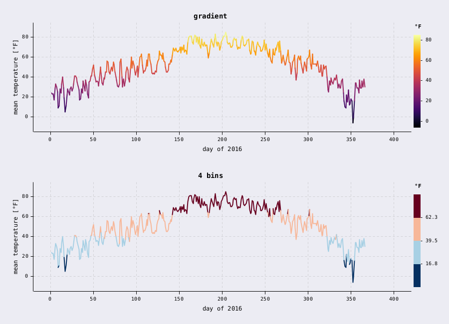
37.6 Accessibility
37.6.1 Colour-blind preview
The render option :cvd draws a whole plot as seen with a colour vision deficiency; plot/cvd-image turns an image already rendered. The default palette as most people see it, then with deuteranopia and protanopia (the render option) and tritanopia (plot/cvd-image).
Source: R Graph Gallery - viridis (colour-blind friendly maps). Data: Edgar Anderson’s iris measurements, R datasets package iris (Anderson 1935; Fisher 1936); licence: Part of R (GPL-2 | GPL-3).
(def cvd-example
{:data iris :mapping {:x :sepal-length :y :sepal-width :color :species}
:charts [(chart/scatter {:size 7})]
:labels {:title "default palette, as most people see it" :x "sepal length" :y "sepal width"}})(plot/render-image cvd-example {:width 480 :height 340})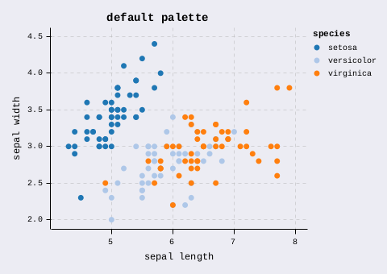
(plot/render-image (assoc-in cvd-example [:labels :title] "deuteranopia (:cvd)")
{:width 480 :height 340 :cvd :deuteranopia})(plot/render-image (assoc-in cvd-example [:labels :title] "protanopia (:cvd)")
{:width 480 :height 340 :cvd :protanopia})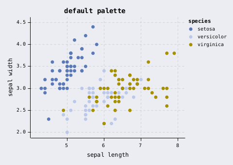
(plot/cvd-image (plot/render-image (assoc-in cvd-example [:labels :title] "tritanopia (plot/cvd-image)")
{:width 480 :height 340})
:tritanopia)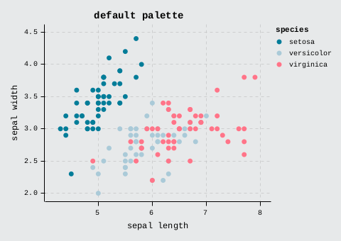
37.6.2 Colour caveats
A rainbow gradient has bright bands that look like edges in the data; viridis changes evenly. Red against green separates categories for most readers but not for deuteranopes: the last panel draws the same colours as a deuteranope sees them (mapped through c/cvd-filter).
Source: data-to-viz - pitfalls; R Graph Gallery - viridis (1, 2). Data: Edgar Anderson’s iris measurements, R datasets package iris (Anderson 1935; Fisher 1936); licence: Part of R (GPL-2 | GPL-3).
(let [red-green {"setosa" :red "versicolor" :green "virginica" :blue}
deutan (c/cvd-filter :deuteranopia)]
(plot/render-image
(plot/arrange
[{:data iris :mapping {:x :sepal-length :y :sepal-width :color :petal-length}
:scales {:color {:range :rainbow}}
:charts [(chart/scatter {:size 7})] :labels {:title "rainbow" :x "sepal length" :y "sepal width"}}
{:data iris :mapping {:x :sepal-length :y :sepal-width :color :petal-length}
:scales {:color {:range :viridis/viridis}}
:charts [(chart/scatter {:size 7})] :labels {:title "viridis" :x "sepal length" :y "sepal width"}}
{:data iris :mapping {:x :sepal-length :y :sepal-width :color :species}
:scales {:color {:range red-green}}
:charts [(chart/scatter {:size 7})] :labels {:title "red / green" :x "sepal length" :y "sepal width"}}
{:data iris :mapping {:x :sepal-length :y :sepal-width :color :species}
:scales {:color {:range (update-vals red-green deutan)}}
:charts [(chart/scatter {:size 7})] :labels {:title "red / green with deuteranopia" :x "sepal length" :y "sepal width"}}]
{:columns 2})
{:width 900 :height 650}))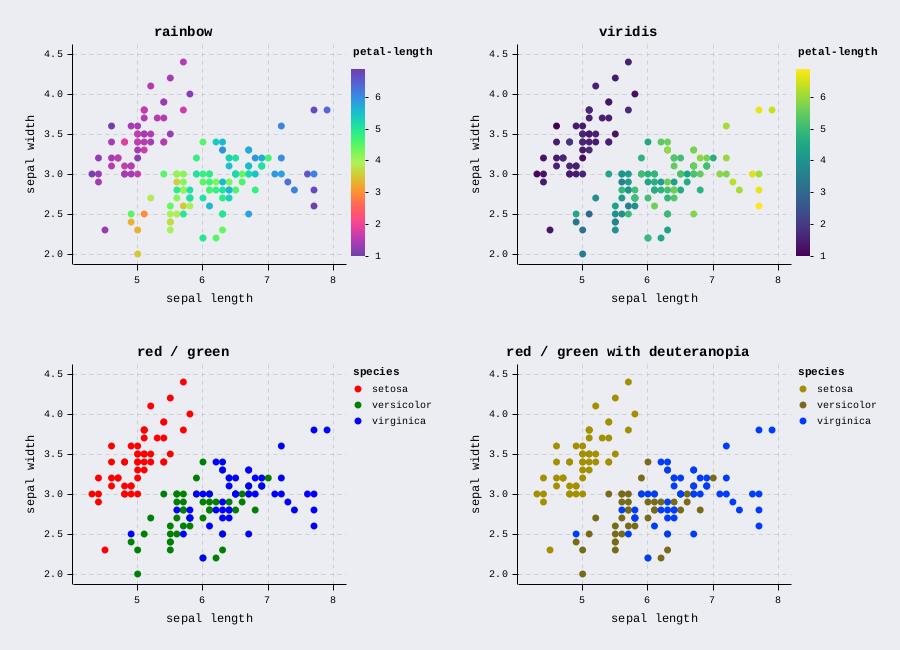
source: notebooks/use_cases/colors.clj